ОРДЕНА ТРУДОВОГО КРАСНОГО ЗНАМЕНИ АРЕНДНОЕ ПРЕДПРИЯТИЕ ПРОМСТРОЙПРОЕКТ
ПОСОБИЕ 1.91 к СНиП 2.04.05-91
РАСЧЕТ И РАСПРЕДЕЛЕНИЕ ПРИТОЧНОГО ВОЗДУХА
Главный инженер института
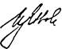
И. Б. ЛьвовскийГлавный специалист
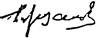
Б. В. БаркаловМОСКВА 1993
Рекомендовано к изданию решением Технического Совета арендного предприятия Промстройпроект.
Пособие 1.91 к СНиП 2.04.05.91. Расчет и распределение приточного воздуха. /Промстройпроект, М. 1993 г.
Пособие 1.91 к СНиП 2.04.05.91 «Расчет и распределение приточного воздуха» разработано Промстройпроектом (канд. техн. наук Б.В. Баркалов), при участии: ЦНИИПромзданий (канд. техн. наук Е.О. Шилькрот), СантехНИИпроекта (инж. Л.Ф. Моор), ГПИ-1 (инж. В.И. Мошкин).
Пособие содержит рекомендации и комментарии, разъясняющие требования основных пунктов СНиП 2.04.05-91 по определению расходов приточного воздуха и распределению его в помещениях с указанием литературы и типовой документации в помощь проектировщикам.
В Пособии использованы материалы и консультации специалистов: ВНИИ охраны труда г. Санкт-Петербурга (д-р техн. наук М.И. Гримитлин, канд. техн. наук Л.В. Павлухин, M.А. Живов, Г.M. Позин), ЦНИИЭП инженерного оборудования (канд. техн. наук М.Д. Тарнопольский), ВНИИГС (канд. техн. наук Л.Б. Успенская, ГПИ Проектпромвентиляция (канд. техн. наук Д.И. Хейфец), Рижский политехнический институт (канд. техн. наук A.M. Сизов).
Пособие предназначено для специалистов в области отопления и вентиляции.
Рецензент доктор технических наук В. П. Титов.
Редактор инженер Н. В. Агафонова.
ПЕРЕЧЕНЬ
ПОСОБИЙ К СНИП 2.04.05-91
«ОТОПЛЕНИЕ, ВЕНТИЛЯЦИЯ И КОНДИЦИОНИРОВАНИЕ».
1.91. Расход и распределение приточного воздуха.
2.91. Расчет поступлений теплоты солнечной радиации в помещения.
3.91. Вентиляторные установки.
5.91. Размещение вентиляционного оборудования.
6.91. Огнестойкие воздуховоды.
7.91. Схемы прокладки воздуховодов в зданиях.
8.91. Численность персонала по эксплуатации систем отопления, вентиляции и кондиционирования.
9.91. Годовой расход энергии системами отопления, вентиляции и кондиционирования.
10.91. Проектирование антикоррозийной защиты.
11.91. Расчетные параметры наружного воздуха для типовых проектов.
12.91. Рекомендации по расчету инфильтрации наружного воздуха в одноэтажные производственные здания.
13.91. Противопожарные требования к системам отопления, вентиляции и кондиционирования.
СОДЕРЖАНИЕ
1. Раздел СНиП 2.04.05-91 (далее СНиП) [1] «Расход приточного воздуха» п.п. 4.42 - 4.48 совместно с обязательными приложениями 17 и 19 должны выполняться при расчетах расхода приточного, наружного и рециркуляционного воздуха для систем вентиляции, вентиляции совмещенной с воздушным отоплением, систем кондиционирования воздуха и воздушного отопления.
2. Расход воздуха должен определяться для теплого и холодного периодов года и для переходных условий в соответствии с п.п. 2.13 - 2.19 СНиП по обязательному приложению 17 по избыткам явной теплоты, вредных и взрывоопасных веществ и по избыткам влаги.
Вместо отдельных расчетов по избыткам явной теплоты и влаги расчет может быть выполнен по избыткам полной теплоты с учетом общих требований СНиП, рекомендаций и примеров к расчету, изложенных в п.п. 1 - 19 Пособия.
Расход воздуха для вентиляции, кондиционирования и воздушного отопления.
3. Допустимая температура для теплого периода года (параметры А) в соответствии с обязательными приложениями 1 и 2 СНиП принимается:
а) в обслуживаемой зоне жилых, общественных и административно-бытовых помещений - не более чем на 3 град. С выше расчетной температуры наружного воздуха (параметры А, далее tА ), но не более 28 град. С. Для районов с расчетной температурой наружного воздуха 25 град. С (параметры А) и выше температура в помещениях не должна превышать 33 град. С. Ограничения температур в обслуживаемой зоне 28 - 33 град. С не распространяются на жилые помещения;
б) на постоянных и непостоянных рабочих местах в рабочей зоне производственных помещений на 4 град. С выше расчетной температуры наружного воздуха в населенных пунктах, где tA > 18 град. С:
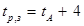
и в населенных пунктах,, где tA < 18 град. С - - выше на 6 град. С:
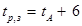
но в обоих случаях для постоянных и непостоянных рабочих мест не выше, град. С: 31/32* - для легких работ; 30/31* - для работ средней тяжести и 29/30* - для тяжелых работ (подробней см. приложение 2 СНиП), категория работ устанавливается технологами, проектирующими производство;
в) в рабочей зоне производственных помещений с полностью автоматизированным оборудованием, функционирующим без присутствия людей (п. 2.2 СНиП), при отсутствии технологических требований к температурному режиму помещений - на 4 град. С выше температур tA, но не ниже 29 град. С, если это экономически целесообразно и при этом не требуется подогрева воздуха.
Примечание: Для терминов: «обслуживаемая и рабочая зоны помещений» применяются сокращения «О и Рз» и отдельно «Оз» и «Рз», в индексах для рабочей и обслуживаемой зоны применяется «р,з».
*) над чертой - для местностей с расчетной температурой наружного воздуха (параметры А) ниже 25 С и под чертой - 25 С и выше.
4. Предельная
разность температур в О или Рз 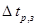
а) при поступлении наружного воздуха через окна или аэрационные проемы за счет естественной тяги или с помощью искусственной вытяжной вентиляции
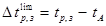
б) при подаче наружного воздуха системами приточной вентиляции без обработки его водой по адиабатному циклу
где:
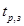
р - полное давление, развиваемое вентилятором, Па.
5. Температура наружного, воздуха, обработанного водой, циркулирующей по замкнутому циклу, tо,в, определяется по схеме адиабатного увлажнения воздуха, построенного на J - d диаграмме (рис.1а).
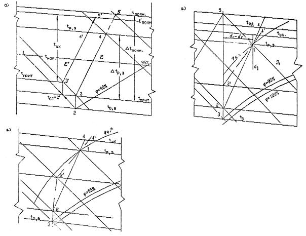
Рис. 1. Схемы процессов приготовления приточного воздуха, построение на J - d диаграмме:
а - по адиабатному процессу, б - по политропному процессу, в - по политропному процессу с применением доувлажнения воздуха в помещении.
Точкой 1 представлены параметры наружного воздуха в теплый период года (для вентиляции - параметры А), прямая 1 - 2 - процесс адиабатного увлажнения воздуха, точкой 2 - параметры воздуха до вентилятора с относительной влажностью 90 - 95 %; прямой 2 - 3 - процесс нагрева воздуха в вентиляторе и воздуховодах, численно равный 0,001 p град. С (здесь р - полное давление, развиваемое вентилятором, Па). Точкой 3 определяется температура приточного воздуха tприт = t3 °C.
Прямой 3 - 4 показан процесс ассимиляции теплоты и влаги в помещении при тепловлажностном отношении e = 3,6Q/W кДж/кг, где Q - избытки теплоты в помещении, Вт, и W - избытки влаги, кг/ч.
Предельная разность температур в
О или Рз помещения при ассимиляции теплоты и влаги воздухом, приготовленным
описанным способом, 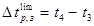
Относительная влажность воздуха в точке 4 не должна превышать:
а) в жилых, общественных и административно-бытовых помещениях - 65%, кроме районов с расчетной относительной влажностью более 75 %, (при tA), где допускается принимать относительную влажность в Оз не более 75 %;
б) в производственных помещениях относительная влажность воздуха в Рз не должна превышать % вычисленных по формуле:
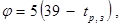
где:
- температура воздуха в рабочей зоне, град. С.
Если в процессе обработки
воздуха водой относительная влажность воздуха в помещении окажется выше
нормативной, то следует регулировать расход воды, останавливая процесс в точке , или
обеспечить параметры , применив предварительное смешение
наружного (т. 1) и наружного увлажненного воздуха (т. 2). Учтя нагрев воздуха 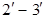
где:
= tсм - температура смешанного наружного воздуха, обработанного водой, циркулирующей по замкнутому циклу (t2) и необработанного с температурой (t1).
Скорость движения воздуха в Оз жилых, общественных и административно-бытовых помещений в теплый период года не должна превышать 0,5 м/с, а в Рз производственных помещений при температуре выше 28 град.С должна быть не более вычисленной по формуле, м/с:
V = Vн + 0,1(tр,з - 28)£Vн + 0,3, (7)
где:
- основная норма скорости движения воздуха в Рз, принимаемая в зависимости от категории работ в помещении и температуры tр,з > 28 град.С по таблице:
категория работ Iа Iб IIа IIб III
Vн 0,2 0,3 0,4 0,5 0,6 м/с
6. Оптимальные метеорологические условия в Оз жилых, общественных и административно-6ытовых помещений в теплый период года следует обеспечивать по обязательному приложению 5 СНиП: температуру воздуха 20-22 град. С, при относительной влажности 60-30% скорости движения воздуха не более 0,2 м/с, а при температуре 23-25 град. С и той же относительной влажности и скорости движения воздуха не более 0,3 м/с.
В производственных помещениях в теплый период года, согласно приложению 2 СНиП в рабочей зоне требуется поддерживать оптимальные метеорологические условия в зависимости от категории работ:
категория работ Iа Iб IIа IIб III
температура в О и Рз 23-25 22-24 21-23 20-22 18-20 град.С
скорость движения воздуха 0,1 0,2 0,3 0,3 0,4 м/с
при относительной влажности воздуха 40-60%.
Кроме того, для производственных помещений в зависимости от класса систем кондиционирования воздуха (далее СКВ) метеорологические условия следует принимать:
- для первого класса - условия, требуемые для технологического процесса (при экономическом обосновании) или по требованиям нормативных документов;
- для второго класса - по приведенным выше оптимальным нормам или по технологическим требованиям; скорость движения воздуха в О или Рз допускается принимать в пределах допустимых норм;
- для третьего-класса - метеорологические условия принимаются в пределах допустимых норм, если они не могут быть обеспечены вентиляцией в теплый период года без применения искусственного охлаждения воздуха или метеорологические условия по оптимальным нормам при экономическом обосновании.
Если технологические требования выходят за указанные выше пределы допустимых параметров, то они должны быть согласованы с органами санитарного надзора.
Примечание. Материалы, которые рекомендуется учитывать при сравнении экономической эффективности СКВ приведены в [2].
7. Предельная разность температур в О или Рз
для СКВ в теплый период года определяется по J-d диаграмме по схеме на рис. 1б. Точка 1 - требуемые параметры
воздуха в О или Рз: из точки 1 проводится прямая 1-2 по лучу тспловлажностного
отношения e= 3,6Q/W кДж/кг, до пересечения с прямой 3-2. проходящей по d = constant из точки 3, где
относительная влажность воздуха 90-95%, до точки 2, температура в которой выше,
чем в точке 3 на число градусов, соответствующее нагреванию воздуха в
вентиляторе и воздуховодах, численно равное t3
- t2 = 0,001р град. С, где р - полное давление,
развиваемое вентилятором, Па. Отрезок 2 - 1 представляет предельную разность
температур в О или Рз 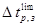 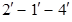
8. Для помещений, в которых требуется поддерживать высокую влажность воздуха, в теплый период года экономически целесообразно применять доувлажнение воздуха с помощью пневматических (как правило) форсунок, размещенных в помещении (см. п.п. 53 - 59). В этом случае предельную рабочую разность температур следует определять из построения условного процесса ассимиляции избытков явной теплоты, показанного на рис. 1в.
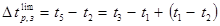
Для определения параметров точки t5 на J - d диаграмме находят точку t1,d1, соответствующую заданным параметрам воздуха в О или Рз помещения, от которой в левую сторону откладывают отрезок, равный Dd = d1 - d5 г/кг, соответствующий мощности проектируемой системы доувлажнения, как правило, не более 2 г/кг.
По прямой J1 = constant на пересечении с d5 находят точку с параметрами t5,d5 и проводят прямую d5 до пересечения с изотермой t2, температура в которой выше температуры t3 на число градусов, равное t2 - t3 = 0,001р град. С. Воздух с параметрами точки 3 может быть получен как сказано в п.п. 6 и 7.
Действительный процесс ассимиляции теплоты и влаги пройдет по линии 2 - 1 - 4, а при невозможности использования всей действительной разности температур 1 - 2, после нагревания воздуха подмешиванием рециркуляционного или после воздухонагревателя, пойдет по линии .
9. Разность температур в О иди Рз помещения, в соответствии с п. 2.10 и прил. 7 СНиП, необходимо проверить на допустимое отклонение температуры, град. С, в приточной струе от нормируемой температуры в обслуживаемой или рабочей зоне. Проверка должна производиться по материалам [3], [4], [5], [19].
Согласно прил. 7 СНиП допускаемое отклонение температуры в приточной струе не должно превышать 1,5 - 2 град., в зоне прямого воздействия струи и 2 - 2,5 град. вне этой зоны, а при кондиционировании соответственно 1 - 1,5 град. С. При принятой разности температур в рабочей зоне 3 или 4 град. С для вентиляции производственных помещений проверка может потребоваться в исключительных случаях, например, для помещений высотой 4 м и менее и при работах на постоянных местах, особенно при работе сидя.
При подаче воздуха охлажденного водой, циркулирующей по замкнутому циклу и при кондиционировании разность температур значительно увеличивается и может принимать значения, до 12 град.С. Поэтому при подаче охлажденного воздуха проверка по прил. 7 СНиП обязательна.
10. Для СКВ, работающих с доувлажнением воздуха в помещении, проверке подлежит только фактическая разность температур в Рз, представленная отрезком 1 - 2 на рис. 1в, а не фиктивная - расчетная разность, представленная отрезком 5 - 2.
Проверка допустимого отклонения температуры в приточной струе от температуры в О или Рз помещения связана с проверкой отклонения максимальной скорости в струе приточного воздуха от средней нормативной по п. 2.10 СНиП.
11. Расход воздуха для вентиляции помещения определяется на основании технологических данных:
а) о поступлении в помещение теплоты, влаги, вредных и взрывоопасных газов и паров, выделяющихся от технологического оборудования и поступающих в помещение, за вычетом удаленных через местные отсосы от оборудования;
б) о расходе воздуха на местные отсосы от технологического оборудования, выделяющего вредные и взрывоопасные газы, пары, пыль и аэрозоли, и на другие нужды - горение, сушку, пневмотранспорт, химические реакции с указанием зоны, из которой забирается воздух.
К потоку теплоты , полученному от технологов, добавляется поступление теплоты от солнечной радиации (см. Пособие 2.91) и от работающих людей. В тех случаях, когда технологи не могут дать расходов воздуха, удаляемого через местные отсосы, они принимаются по справочнику [4]. При определении расхода вентиляционного воздуха для переходных условий и холодного периода года учитываются потери теплоты через ограждения помещения.
При определении расхода воздуха на вентиляцию следует руководствоваться требованиями п. 4.58 и п. 4.55 СНиП. Согласно п. 4.58 «Удаление воздуха из помещений системами вентиляции следует предусматривать из зон, в которых воздух наиболее загрязнен или имеет наиболее высокую температуру или энтальпию.» - это основная часть требований данного пункта, руководствуясь которой следует обратиться к табл. 1 и 2 коэффициентов воздухообмена и учитывая возможные варианты организации распределения приточного воздуха в помещении выбрать оптимальный вариант, соответствующий наибольшему из возможных коэффициентов воздухообмена. [6, 7, 7а].
Руководствуясь п. 4.55 СНиП - «В производственные помещения приточный воздух следует подавать в рабочую зону», далее в нем указываются варианты подачи воздуха в рабочую зону, из которых непосредственная подача в рабочую зону наиболее эффективна (см. табл. 2), но не всегда осуществима. Основное требование этого пункта - указание о распределении всего объема приточного воздуха в рабочую зону, не деля его на рабочую и верхнюю зоны, на которые делится расход воздуха, удаляемый из помещения. Максимальный эффект достигается при минимальных удалениях воздуха из нижней - рабочей зоны, т. е. принимая для удаления из нее только заданные расходы на местные отсосы и на технологические нужды. Весь остальной воздух следует удалять общеобменной вентиляцией из верхней зоны. Исключения из этих правил приведены в п.4.56 - 4.60 СНиП. Они касаются помещений со значительными влаговыделениями; с выделениями пыли, и при кондиционировании воздуха помещений в части, идущей на рециркуляцию и др.
В помещениях с избытками теплоты температура и концентрация вредных газов и паров в верхней зоне больше, чем в О или Рз. Это как правило касается и тех газов и паров, которые имеют удельный вес больше удельного веса воздуха. В производственных помещениях с удельными избытками теплоты более 23 Вт/куб. м (см. табл. 1) в верхней зоне разность температур 1,3 - 2 раза, а разность концентраций вредных паров и газов 1,3 - 2,7 раз больше, чем таковые в рабочей зоне.
При незначительных удельных избытках теплоты и воздухообменах до 5 крат в час разность температур в верхней зоне, в зависимости от способа подачи приточного воздуха, при экспериментах ВНИИГС с тяжелыми газами (опыты велись [7а] с СО2 в 44/29 = 1,5 раз тяжелее воздуха) в 1,05 до 1,3 раз выше чем в рабочей зоне, а по разности концентраций вредных газов до 1,85 раз превышает их в рабочей зоне. Только при воздушных струях, настилающихся на потолок или выпущенных сосредоточенно в верхней зоне, разность температур снижается в верхней зоне до 0,95 от таковой в рабочей зоне.
При больших воздухообменах температуры и концентрации газов и паров (последние в меньшей мере) выравниваются по высоте помещения и коэффициенты становятся равны или близки к 1, за счет интенсивного перемешивания воздуха. Известно, что в помещении циркулирует в 10 - 20 и более раз больше воздуха, чем воздуха, вентилирующего помещение. Если весь объем вентиляционного воздуха удалять из рабочей зоны, то и тогда струи, направляемые в рабочую зону вынесут из нее в 9 - 19 раз больше воздуха в верхнюю зону, потоками, питающими приточные струи. Следовательно, даже при коэффициентах воздухообмена равных 1 и меньше, удаляемый воздух целесообразно забирать из верхней зоны, т. к. он уже получил импульс двигаться в этом направлении. Ведь известно и то, что всасывающие факела весьма мало активны, поэтому общеобменная вытяжка ни в какой степени не может сравниваться с действием приточных струй.
Из нижней зоны помещений (у пола) рекомендуется проектировать общеобменную вытяжку в складах баллонов с холодными и жидкими газами и при рециркуляции воздуха в СКВ. При этом следует учитывать требование об удалении из верхней зоны не менее однократного воздухообмена в час, а в помещениях высотой более 6 м не менее 6 куб. м/ч на 1 кв. м площади помещения, в котором выделяются вредные или горючие газы или пары. Это также может служить основанием для определения расхода воздуха из нижней зоны (по разности расходов, путем последовательного приближения).
Требования п.п. 4.57 и 4.58 СНиП 2.04.05-86 об удалении из нижней зоны 2/3 общего расхода воздуха помещения, если в нем выделяются газы или пары, имеющие удельный вес больше удельного веса воздуха и 1/3 при меньшем удельном весе - исключены из СНиП, как необоснованные.
12. Для определения расхода приточного воздуха при ассимиляции избытков теплоты, влаги и вредных и взрывоопасных веществ, поступающих в помещение в теплый период года, следует использовать формулы (1) - (4) обязательного приложения 17 к СНиП или формулы 10 - 12 Пособия. Предварительно, в зависимости от вида расчета, необходимо определить полную разность температур, Dtуд, влагосодержания, Ddуд, теплосодержания (энтальпии), DJуд, или разность концентраций вредных веществ в воздухе, уходящем из помещений, Ddуд, (как правило, из верхней зоны) и в воздухе, поступающем в помещение.
Для определения этих величин пользуются разностью их в рабочей зоне, определенной по п.п. 1 - 10 и коэффициентами воздухообмена: Kвоз для температур Кt, для влагосодержания и вредных веществ, отличным от них коэффициентом Кq. Расчет ведется по формулам:
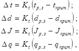
где:
tр,з, dр,з, Jр,з, qр,з - температура, град. С, влагосодержание, г/кг, энтальпия, кДж/кг, в рабочей зоне помещения и tприт, dприт,. Jприт, qприт - в приточном воздухе.
Коэффициенты воздухообмена следует принимать по нормативным или экспериментальным данным, полученным для данного или аналогичного объекта. При отсутствии таких данных Кt и Кq могут приниматься по табл. 1 или 2.
13. Расход воздуха для ассимиляции избытков явной теплоты при вентиляции и кондиционировании воздуха следует определять в куб. м/ч по формулам:
а) при отсутствии удаления воздуха из рабочей зоны помещения:
б) при удалении части воздуха из рабочей зоны:
в) при удалении всего воздуха из верхней зоны:
где:
Q - избытки явной теплоты, Вт, - разность тепловых потоков, поступающих в помещение и уходящих из него при расчетных параметрах наружного воздуха, после осуществления технологических и строительных мероприятий по уменьшению теплопоступлений в помещение от оборудования и трубопроводов;
с - теплоемкость воздуха, равная 1,2 кДж/(куб. м град. С) при определении расхода в куб. м/ч или 1,0 кДж/(кг град. С) при расходе в кг/ч;
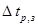
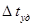
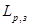
14. При определении расхода наружного воздуха для вентиляции с целью ассимиляции избытков явной теплоты в помещении при переходных условиях, как правило, исходят из невозможности подавать воздух с расчетной температурой 8 град. С (см. п. 2.17 СНиП) на постоянные рабочие места. Поэтому в проекте предусматривают устройства, направляющие поток воздуха из воздухораспределителей, при переходных условиях горизонтально, вверх или в сторону от постоянных рабочих мест. Допустимые температуры воздуха в рабочей зоне рекомендуется принимать по графе 8 прил. 2 СНиП, в зависимости от категории работ от 12 до 18 град. С. Этим определяется минимальная разность температур в рабочей зоне, равная при тяжелой работе 12 - 8 = 4 град. С и при других категориях тяжести соответственно 5, 7, 9 и 10 град. С. Температуры воздуха в рабочей зоне превышающие 12 - 18 град. С можно принимать, обосновывая разность температур в рабочей зоне расчетом по п. 9.
15. В холодный период года, началом которого являются переходные условия, когда начинает действовать система теплоснабжения или имеется возможность подогревать приточный воздух за счет использования тепловых вторичных источников теплоты или принимать рециркуляцию воздуха, (в помещениях с избытками теплоты) разность температур воздуха в О или Рз следует принимать максимальной, обоснованной по п. 9 Пособия.
Температура воздуха в рабочей зоне помещения должна приниматься максимальной из приведенных в графах 7 и 8 прил. 2 СНиП или устанавливаться как экономически целесообразная, в соответствии с п. 2.1 СНиП.
Расход воздуха- определяется по формулам (10) - (12) и принимается постоянным на весь холодный период года, если он превышает расходы, полученные по п.п. 16 и 17.
где:
- заданный технологами расход воздуха, удаляемого из рабочей зоны помещения, куб. м/ч, на местные отсосы и технологические нужды;
m - заданная масса вредных газов, паров и аэрозолей, поступающих в помещение, мг/ч;
= - qпp - разность концентраций вредных веществ в рабочей зоне помещения, принимаемая для равной ПДК и qпp - по расчету концентраций в воздухоприемных устройствах, но не более 0,3 ПДК;
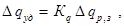
17. Расход приточного воздуха, куб. м/ч, для обеспечения норм взрывопожарной безопасности следует определять по формуле (13) или (14) отдельно для массы «m» каждого из горючих газов, паров и аэрозолей, мг/ч, поступающих в помещение и, учитывая в дальнейших расчетах большую из найденных расходов.
Связывающий эффект - разность
концентраций в формуле
(13) следует принимать одинаковой для рабочей и верхней зоны 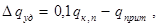 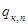
qприт - концентрация горючего газа, пара или пыли (аэрозолей) в воздухе, подаваемом в помещение, мг/м3.
Примечание: Для большинства вредных газов или паров концентрации
их в воздухе, соответствующие ПДК на порядок ниже концентраций, соответствующих
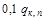
Таблица 1
Значения коэффициента воздухообмена Кt для расчета температуры и Kq для расчета концентраций вредных и взрывоопасных газов и паров в верхней зоне помещений со значительными избытками теплоты, при подаче воздуха непосредственно в рабочую зону или наклоненными струями в направлении рабочей зоны.
|
Помещения с избытками теплоты (явной) более 23 Вт/куб. м |
Кt |
Kq |
|
Кузнечно-прессовые, печные пролеты сталеплавильных, рельсопрокатных цехов, цехов с нагревательными колодцами, блюминги, склады горячего металла, цехи эмалирования |
2,0 |
2,7 |
|
Термические |
1,9 |
2,6 |
|
Сушильные |
1,8 |
2,5 |
|
Литейные |
1,7 |
2,3 |
|
Доменные и кузнечные |
1,6 |
2,2 |
|
Прокатные |
1,5 |
2,1 |
|
Электролизные цехи, машинные залы, компрессорные |
1,4 |
1,9 |
|
Цехи вулканизации и производства изделий из пластмасс |
1,3 |
1,8 |
Значения коэффициентов воздухообмена Кt и Кq для помещений с незначительными избытками явной теплоты.
|
Подача воздуха |
Удельные избытки теплоты Вт на 1 м3 помещения |
|||||
|
до 20 Вт |
20-50 Вт |
50 и более Вт |
||||
|
Воздухообмен 1/ч |
||||||
|
3 - 5 1/ч |
5 - 10 |
10 и более |
||||
|
Кt |
Кq |
Кt |
Кq |
Кt |
Кq |
|
|
Непосредственно в рабочую зону |
1,3 |
1,85 |
1,2 |
1,4 |
1,05 |
1,15 |
|
Наклоненными струями в направлении рабочей зоны: |
||||||
|
с высоты не более 4м |
1,15 |
1,4 |
1,1 |
1,2 |
1 |
1,1 |
|
с высоты более 4м |
1 |
1,2 |
1 |
1,1 |
1 |
1,05 |
|
Сосредоточенно, выше рабочей зоны |
0,95 |
1,1 |
1 |
0,95 |
1 |
1 |
|
Сосредоточенно, выше рабочей зоны с использованием направляющих сопел |
1 |
1 |
1 |
1 |
1 |
1 |
|
Сверху вниз: |
||||||
|
настилающимися струями |
0,95 |
1,1 |
1 |
1,05 |
1 |
1 |
|
коническими строями |
1,05 |
1,1 |
1 |
1,05 |
1 |
1 |
|
плоскими струями |
1,1 |
1,2 |
1,05 |
1,1 |
1 |
1 |
18. Расход воздуха для воздушного отопления, не совмещенного с вентиляцией или кондиционированием, куб. м/ч, следует определять по формуле (8) Приложения 17 СНиП, если удаление воздуха производится из рабочей зоны. При удалении воздуха из верхней зоны, расход его для воздушного отопления рекомендуется определять по формуле (15), отличающейся от формулы (8) СНиП введением коэффициента КВ:
где коэффициент воздухообмена равен КВ = 0,9;
Qт,п - тепловой поток для отопления, Вт;
tп - температура подогретого воздуха, град. С;
tp,з - температура воздуха в рабочей зоне, град. С;
с - теплоемкость воздуха, 1,2 кДж/куб. м · град. С.
19. Для воздушного отопления, совмещенного и несовмещенного с вентиляцией или кондиционированием воздуха, разность температур приточного подогретого воздуха и воздуха в рабочей зоне Dtп = tп - tp,з рекомендуется принимать не более полученной по формулам:
а) при наклонной подаче воздуха сверху в направлении рабочей зоны по рис. 2а:
но не более, чем при вертикальной подаче по формуле (17):
б) при вертикальной подаче воздуха вниз по рис. 2д:
в) при сосредоточенной горизонтальной подаче воздуха в верхней зоне по рис. 2б:
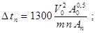
где:
m - скоростной коэффициент воздухораспределителя, принимаемый по прил. 2;
n - температурный коэффициент воздухораспределителя, принимаемый по прил. 2;
Н - высота оси воздухораспределителя, м, от пола;
hр,з - высота рабочей зоны, м;
a - угол наклона оси струи к горизонтали, град.;
V0 - скорость движения воздуха при выходе из воздухораспределителя, м/с;
А0 - расчетная площадь воздухораспределителя, кв. м, по прил. 2;
Ап - площадь поперечного сечения помещения в плоскости, перпендикулярной начальному направлению струи, приходящаяся на одну струю, кв. м.
При наклонной подаче воздуха в формуле (16) превышение оси приточной струи над уровнем рабочей зоны Н - hр,з не должно быть менее 2 м. Если в результате расчета воздухораспределителя в режиме вентиляции или отопления для системы вентиляции, совмещенной с воздушным отоплением, предельная рабочая разность температур Dtп окажется меньше требуемой при расходе приточного воздуха, равном расходу в теплый период года, то следует принять расход воздуха по теплому периоду, а недостающий тепловой поток для отопления помещения подавать дополнительной системой отопления.
Расчет расхода воздуха - см. пример 1.
Рисунок 2. Способы подачи воздуха в производственные помещения:
1 - воздухораспределитель; 2 - источник выделения теплоты; 3 - вытяжное устройство; 4 - воздуховод;
X - расчетная длина струи приточного воздуха, м; Х0 - длина струи до места отрыва от потолка, м.
20. Тамбуры-шлюзы предназначены для повышенной изоляции помещений, у которых они устраиваются (в дальнейшем «защищаемые помещения») и уменьшения перетекания воздуха из них в соседние помещения или коридор. Наибольшее перетекание воздуха происходит при открытии дверей, поэтому в тамбурах-шлюзах применяются самозакрывающиеся двери с пружинами или с противовесами. Более надежны двери с электромагнитным затворам, не позволяющим одновременное открытие обеих дверей тамбура-шлюза. Такой затвор устраивается в тамбурах-шлюзах при помещениях со строгим технологическим режимом, при кондиционировании воздуха первого класса и в «чистых» комнатах. В аварийных ситуациях и при пожарах замки дверей разблокируются.
Для уменьшения перетекания воздуха при закрытых дверях в тамбур-шлюз подается наружный воздух с расходом, обеспечивающим давление на 20 Па выше, чем в защищаемом помещении. Давление 20 Па является нормативным, установленным ГУПО МВД СССР, хотя величина его ни теоретически, ни экспериментально не обоснована и не привязана к давлениям воздуха в помещениях, которые разделяются тамбуром-шлюзом. В зависимости от баланса между притоком и вытяжкой воздуха, а также под влиянием теплового и ветрового давлений в процессе эксплуатации в защищаемом помещении могут создаваться весьма различные давления воздуха. Например, в здании высотой 30 м, при ветре со скоростью 5 м/с, при переходных условиях и открытых окнах с наветренной стороны может создаваться давление порядка 30 Па. При этом в тамбуре-шлюзе должно поддерживаться давление 30 + 20 = 50 Па.
Давление воздуха в помещении непрерывно изменяется в зависимости от скорости и направления ветра и разности температур наружного и внутреннего воздуха. Поэтому в проектах целесообразно предусматривать некоторую минимальную разность давлений между защищаемым и смежными помещениями, если она не задана по технологическим и другим факторам. Положительное давление предусматривается в помещениях с кондиционированным воздухом и отрицательное в помещениях с выделением вредных веществ. Для «чистых помещений» п. 4.52 СНиП делается исключение из этого правила.
На основании задания, расчета или анализа воздушных режимов здания следует установить вероятное максимальное и минимальное давление воздуха в защищаемом помещении и в соответствии с этим режим давлений в тамбуре-шлюзе. Постоянство подпора или разрежения по отношению к защищаемому помещению достигается регулированием приточных и вытяжных систем вентиляции. При отсутствии возможности провести описанные расчеты давлений в помещении расход воздуха, куб. м/ч в тамбур-шлюз рекомендуется определять задавшись избыточным давлением в помещении 10 или минус 10 Па, по формуле:
где:
m - коэффициент расхода, равный 0,62;
А - площадь щелей в каждой двери тамбур-шлюза, кв. м;
r - плотность приточного, зимой подогретого воздуха, принимаемая 1,2 кг/куб. м;
n - показатель степени, принимаемый 0,5 при щелях 1 мм и более и 0,67 - при щелях шириной менее 1 мм;
DР1 - избыточно давление в тамбуре-шлюзе по отношению к избыточному давлению воздуха в защищаемом помещении, при рекомендуемых расчетных условиях 20 + 10 = 30 Па или 20 - 10 = 10 Па;
DР2 - избыточное давление в тамбуре-шлюзе по отношению к коридору или смежному помещению соответственно 30 или 10 Па.
К = 2882 при n = 0,5 и 3143 при n = 0,67.
Расчеты - см. примеры 2 и 3.
Минимальный расход воздуха, подаваемого в тамбур-шлюз (двери закрыты), по СНиП - 250 куб. м/ч.
21. Дисбаланс воздуха между смежными помещениями, разделенными дверями, устанавливается на тех же основаниях, что и для тамбура-шлюза. Поддержание постоянной разности давлений между двумя помещениями достигается регулированием производительности приточных и вытяжных вентиляционных систем. Расчет расхода воздуха через щели дверей рассчитывается по формуле (19) при DР2 = 0; DР1 принимается + 10 Па. Минимальный расход воздуха через закрытую дверь согласно СНиП равен 100 куб. м/ч.
22. Расход воздуха для шиберующих и смесительных воздушных (ВЗ) и воздушно-тепловых завес (ВТЗ) рекомендуется определять по Справочнику проектировщика [4, 19] по «Указаниям» [10] - [15].
Влияние ветра в соответствие с требованиями п. 4.71 СНиП в расчетах ВЗ и ВТЗ учитывается при определении расчетной разности давлений, которую следует определить расчетом воздушного режима здания с учетом гравитационного и ветрового давления и дисбаланса, создаваемого системами приточной или вытяжной вентиляции с механическим побуждением.
Расход воздуха, согласно п. 4.71 СНиП, следует определять, принимая температуру наружного воздуха и скорость ветра при параметрах Б, но не более 5 м/с. Если скорость ветра при параметрах Б меньше, чем при параметрах А, то воздухонагреватели следует проверять на параметры А.
23. Типовая документация по воздушно-тепловым завесам:
а) Воздушно-тепловые завесы для ворот промышленных зданий, серия 1.494-2 [13].
б) Воздушно-тепловые завесы с центробежными вентиляторами, серия 5.904-7 [19].
в) Автоматическое управление и силовое электрооборудование воздушно-тепловых завес с центробежными вентиляторами, серия 904-02-8* [15].
Примечание: Михневским заводом вентиляционных заготовок серийно выпускаются воздушно-тепловые завесы ЗТ.В2-25.01.УЗ для ворот с размерами проема 3×3 м и ЗТ.В2-28.01-УЗ для ворот с размерами 3,6×3,6 м. Технические данные этих завес приведены в технических условиях ТУ 36.19.24.08-001-87.
24. Способ подачи воздуха следует выбирать с учетом деления производственных помещений на две категории.
К первой категории относятся помещения высотой 6 - 8 м и более. Это основные цеха заводов автомобилестроения, вагоностроения, судостроения, химического машиностроения, домостроительных комбинатов и т. п. с пролетами шириной от 12 до 36 м и кратностью воздухообмена до 5 - 7 1/ч, при удельных расходах воздуха 25 - 75 куб. м/(кв. м · ч). Особых технологических требований к равномерности распределения параметров воздуха по рабочей зоне этих цехов не предъявляется.
Ко второй категории относятся производственные помещения высотой менее 6 - 8 м (основные цеха заводов радиотехнической, электронной, приборостроительной, станкостроительной, легкой промышленности и т. п.). Помещения, как правило, размещаются в многоэтажных зданиях с пролетами шириной 6, 9 и 12 м. Кратность воздухообмена 10 и более обм. 1/ч, при удельных расходах воздуха 20 - 80 куб. м/(кв. м · ч). В некоторых из этих помещений технологический процесс существенно зависит от равномерности распределения параметров воздуха в рабочей зоне.
25. Для производственных помещений первой категории с незначительными избытками явной теплоты рекомендуются следующие способы подачи приточного воздуха:
а) наклонными струями в направлении рабочей зоны (рис. 2а) через воздухораспределители типа НРБ, РВ и ВBP;
б) непосредственно в рабочую зону (рис. 2б, в) через воздухораспределители типа РР, РВ, РРНП, УНВ (напольные вихревые) ВЭПш (в режиме вентиляции);
в) смыкающимися, не смыкающимися и настилающимися коническими струями сверху вниз с высоты не более 8 м (рис. 2г, д, е) через воздухораспределители типа ВР, ПРМ (плафоны) и ВК;
г) сосредоточенно выше рабочей зоны (рис. 2ж, и, к) через воздухораспределители типа ВСП, ВГКм, РР, РВ и с использованием направляющих сопел (рис. 2и).
26. Для производственных помещений первой категории со значительными избытками явной теплоты рекомендуется подача:
а) непосредственно в рабочую зону (рис. 2а) через решетки РБ, РР, РРНП и через напольные воздухораспределителя типа УВН (рис. 2в, телефонные станции, помещения ЭВМ);
б) в направлении рабочей зоны наклоненными струями с высоты, как правило, не более 4 м (рис. 2а) через воздухораспределители типа НРВ, РВ и ВВР.
27. Для производственных помещений второй категории рекомендуются следующие способы подачи воздуха:
а) сверху вниз веерными (рис. 2г, д) коническими струями через воздухораспределители типа ВР, ВДШп и ПРМ;
б) сверху вниз настилающимися компактными и неполными веерными струями - (рис. 2е, ж) через воздухораспределители (решетки) типа РР и РВ;
в) сверху вниз плоскими струями через перфорированные воздухораспределители типа ВПК или через щелевые выпуски;
г) непосредственно в рабочую зону закрученными струями через воздухораспределители типа ВЭПш (рис. 2б) или через напольные воздухораспределители типа УВН (рис. 2в).
28. Для помещений общественных зданий высотой более 5 - 6 м (залы, аудитории) рекомендуется подача воздуха наклоненными вниз компактными или плоскими струями, направленными в сторону экрана иди спортивную площадку через воздухораспределители типа РР, РВ, РРНП* и ВПФ*, располагаемые выше обслуживаемой зоны. Воздухораспределители допускается устанавливать в боковых стенах.
Допускается подавать воздух компактными вертикальными струями через воздухораспределители типа РРНП* и ВПФ*.
Основные характеристики воздухораспределителей приведены в прил. 2.
* воздухораспределители для общественных зданий, рабочая документация на которые разработана ЦНИИЭП инженерного оборудования.
29. Подачу воздуха наклоненными струями в рабочую зону по рис. 2а в помещения с кратностью воздухообмена менее 3 - 5 1/ч, при удельном расходе воздуха 12 - 40 куб. м/(кв. м · ч), рекомендуется осуществлять с высоты не более 4 м; в помещения с большей кратностью воздухообмена с высоты более 4 м.
30. В помещениях с крупногабаритным технологическим оборудованием (высотой более 3 м) предпочтительна подача воздуха:
- непосредственно в рабочую зону по рис. 2б;
- наклоненными струями в пространство между технологическим оборудованием по рис. 2а;
- сосредоточенно с использованием направляющих сопел по рис. 2и или закрученными струями из напольных воздухораспределителей рис. 2в. [16].
31. Отопительно-вентиляционные системы с направляющими соплами (рис. 2и) рекомендуется применять в помещениях, длина которых не более чем в 2 раза превышает эффективную длину сосредоточенных струй, а также если сосредоточенными струями нельзя подать необходимое количество теплоты или холода. Системы по рис. 2и могут применяться при работе систем с переменным расходом воздуха.
32. В помещениях конструкторских и проектных бюро, контор рекомендуется подавать воздух в направлении окон через воздухораспределители типа РР, РВ и РРНП*, установленные выше обслуживаемой зоны или непосредственно под окнами через воздухораспределители эжекционных кондиционеров доводчиков (ЭКД). Такая подача воздуха уменьшает отрицательное воздействие ниспадающих холодных токов от окон.
33. В помещениях высотой менее 5 - 6 м или в отдельные зоны, имеющие подшивной потолок (торговые залы, балконы зрительных залов, трибуны спортивных залов), рекомендуется подавать воздух настилающимися веерными струями через воздухораспределители типа ВДШп и ПРМ (рис. 2е).
При наличии на потолке выступающих конструкций (балки, ригели, ребра), а также светильников с большими тепловыделениями рекомендуется подавать воздух коническими и неполными веерными струями на высоте 3 - 6 м через воздухораспределители типа ПРМ, ВК*, РВ и РРНП*.
34. В системах с переменным расходом воздуха, подачу воздуха рекомендуется осуществлять через воздухораспределители, позволяющие изменять угол наклона (ВВР) или угол наклона и форму струи от веерной до смыкающейся конической (ВР и ПРМ) и от неполной веерной до компактной (РВ), а также отопительно-вентиляционными системами с направляющими соплами.
35. Расчет воздухораспределения следует производить в соответствии с «Рекомендациями по выбору и расчету систем воздухораспределения», серия А3-669, М., 1979 г. [3] и по выпускам «О» соответствующей серии типовых чертежей (см. приложение 3).
36. Расчет воздухораспределения с направляющими соплами следует выполнять по «Рекомендациям по расчету отопительно-вентиляционных систем с направляющими соплами», М., ЦНИИПЗ, Лен. ПСП, ВНИИОТ, 1984 г. [16].
37. Расчет воздухораспределения в помещениях общественных зданий следует выполнять по «Рекомендациям по расчету воздухораспределения в общественных зданиях», М., ЦНИИЭП инженерного оборудования, 1981 г. [17].
38. В пунктах 38 - 44 приводятся дополнительные расчеты распределения воздуха в помещениях, в которых кондиционирование воздуха должно обеспечить равномерное распределение температуры по их площади. С этой целью по рис. 2 следует выбрать одну из следующих схем:
а) выпуск воздуха из плафонов струей по схеме на рис. 2г; расчет проводится по номограмме на рис. 3а или рис. 3б, если струе обеспечена скоростная характеристика, соответственно т = 1,1 или 3,6;
б) выпуск настилающейся струей по схеме на рис. 2е или конической рис. 2д, расчеты производятся соответственно по номограмме на рис. 3в или рис. 3г;
в) выпуск воздуха из решетки струей настилающейся на потолок по схеме на рис. 3ж, расчет следует производить по номограмме на рис. 3д или рис. 3е, обеспечив скоростной коэффициент m = 6 и ширину струи не более bмакс =2 (lп + hп - hр,з)/m; при m = 2,4 - ширина струи может быть увеличена вдвое; здесь lп, hп, hр,з - длина помещения или его зоны в направлении распространения струи, высота помещения и рабочей зоны, м;
г) ширина струи при выпуске воздуха из плафонов не должна быть более 0,7 lп и площадь зоны Ап = 0,7 · l2.
Расчет - см. пример 5.
Число воздухораспределителей, размещаемых в помещении:
N = Ап/Аз (20)
где:
Ап, Аз - площадь помещения и площадь зоны, обслуживаемая одним воздухораспределителем, кв. м.
39. Расчетная площадь воздухораспределителя, А0, кв. м, определяется по формуле:
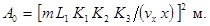
в дальнейшем заменяется расчетной площадью ближайшего из типовых воздухораспределителей.
Здесь m - скоростной коэффициент воздухораспределителя, принимаемый по прил. 2;
L1 = 0,000278 L0 - расход воздуха, куб. м/с, через каждый воздухораспределитель; L0 куб. м/ч - выбирается из рекомендуемых величин в прил. 2;
К1, К2, К3 - соответственно коэффициенты неизотермичности, взаимодействия и стеснения струи; для осесимметричных и конических струй из плафонов:
для веерных струй из плафонов и компактных и неполных веерных струй из решеток К = 1;
К2 = 1 - для струй всех типов;
К3 = 0,9 - для осесимметричных струй из плафонов;
0,8 - для конических струй из плафонов и компактных или неполных веерных из решеток;
n - температурный коэффициент воздухораспределителя, принимаемый по прил. 2;
Нр, hр,з - высота установки воздухораспределителя над полом и высота рабочей зоны, м;
Аr0 - критерий Архимеда, определяемый по формуле (27);
vx - скорость воздуха, м/с на оси струи в месте ее поступления в рабочую зону, связанная с нормируемой величиной vр,з, м/с, зависимостью vx = Кvр,з, где К - коэффициент, принимаемый в соответствии с прил. 6 к СНиП; в начале расчета величину коэффициента К принимают равной 1; затем уточняют;
х - длина струи, определяемая по рис. 3.
Типоразмер воздухораспределителя, А0, должен находиться в пределах, рекомендуемых значений расхода воздуха, указанных в прил. 2.
40. Максимальную рабочую
разность температур приточного воздуха Dtмакс град. С, при которой отклонение
температур по площади рабочей зоны не превысит допустимой величины* 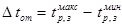
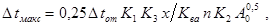
где:
К1, К2, К3, х - по предыдущему;
n - температурный коэффициент струи по табл. 4;
Ква - коэффициент вариации распределения температуры по площади рабочей зоны, равный 0,8 при подаче воздуха через плафоны компактными осесимметричными и коническими струями и 1,5 - при подаче воздуха через плафоны веерными струями или через решетки.
41. Расход воздуха L0, куб. м/ч, через каждый воздухораспределитель, при Dtмакс < Dtр,з подлежит уточнению по формуле:
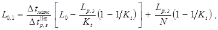
где:
Kt - коэффициент воздухообмена, по табл. 1 и 2;
Если L0,1 > L0, то расход воздуха через воздухораспределитель принимают равным L0,1 и снова по п. 39 определяют А0 и повторяют расчет.
42. Для соблюдения расчетной схемы развития струи расстояние X0, м, до места отрыва струи от потолка должно удовлетворять формулам (26) - (28):
- для веерной струи по схеме на рис. 2е
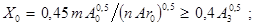
- для компактной или неполной веерной струи, выпускаемой через решетку:
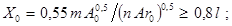
* Исследования проводились при Dtот = 2 град. С.
- для конической струи должно выполняться условие:
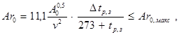
где:
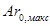
А0 - расчетная площадь, кв. м, выбранного воздухораспределителя по прил. 2;
А3 - площадь зоны, кв. м, обслуживаемой одним воздухораспределителем;
m, n - по предыдущему;
Dtр,з - равно 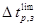
43. Воздухораспределители для душирования рабочих мест следует принимать с устройствами для регулирования расхода и направления струи в горизонтальной плоскости на угол до 180 град. и в вертикальной плоскости - на 30 град. (СНиП, п. 4.79). Рекомендуется применять воздухораспределители серии 5.904-31 УВД-1, УВД-2 и УВД-3 [18], [19]. С расчетной площадью соответственно 0,17; 0,38; и 0,68 кв. м., имеющие скоростной коэффициент m = 6 и температурный n =4,9.
44. Расстояние от рабочего места до воздухораспределителя воздушного душа следует принимать не менее 1 м, направляя воздушную струю:
а) на грудь рабочего горизонтально или сверху под углом 45 град., при облучении тепловым потоком плотностью 140, Вт/кв. м и более;
б) в зону дыхания горизонтально или сверху вниз при открытых технологических процессах, сопровождающихся выделением вредных веществ.
45. За расчетные нормируемые параметры воздушной струи при душировании на постоянном рабочем месте следует принимать:
а) минимальную температуру воздушной струи по приложению 3 СНиП, если температура воздуха в рабочей зоне вне струи выше нормируемой; если температура воздуха здесь ниже нормируемой, то температуру воздушной струи следует принимать равной максимальной из указанных в приложении 3 СНиП; при открытых технологических процессах и облучении менее 140 Вт/кв. м температуру воздушной струи принимают равной нормируемой по приложению 2 СНиП;
б) концентрацию вредных веществ в воздушной струе, равную ПДК;
в) максимальную скорость движения воздуха в струе, по приложению 3 СНиП при принятой температуре воздушной струи и соответствующем тепловом облучении. При открытых технологических процессах и облучении менее 140 Вт/кв. м скорость движения воздуха в струе, равной нормируемой по приложению 2 СНиП.
46. Расчетная площадь воздухораспределителя А0, кв. м, определяется по формулам:
а) при душировании адиабатно охлажденным воздухом рабочих мест, подверженных облучению тепловым потоком:
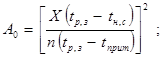
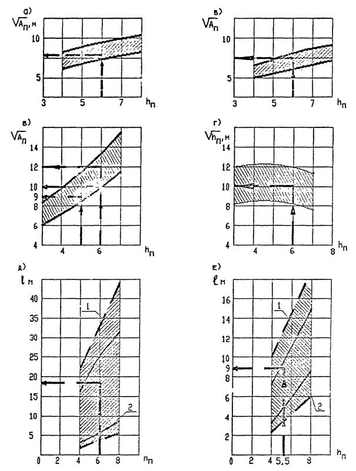
Рис. 3. Максимальный размер помещения или его
зоны 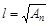
Ап - площадь помещения или его зоны, обслуживаемая одним воздухораспределителем, м2; а - компактной струей из плафонов, рис. 2г, при m = 1,1; б - то же, при m = 3,6; в - веерной струей, рис. 2е; г - конической струей, рис. 2д; д - настилающейся струей из решетки, рис. 2ж, при m = 6; 1 - ширина струи «b» минимальная; 2 - ширина струи максимальная; е - настилающейся струей из решетки при m = 2,4; hп - высота установки воздухораспределителя.
б) при душировании искусственно охлажденным воздухом (tприт = tохл) рабочих мест, подверженных облучению тепловым потоком:
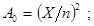
в) при душировании рабочих мест, подверженных загрязнению вредными веществами:
где:
Х - расстояние, м, от места выхода воздушной струи из воздухораспределителя до рабочего места;
n - температурный коэффициент воздухораспределителя, по п. 43;
tр,з, qр,з - соответственно температура, град. С, и концентрация вредных веществ, мг/куб. м, в воздухе на рабочем месте при неработающем воздушном душе;
tн,с - нормируемая температура воздуха в струе на рабочем месте, град. С, по прил. 3 СНиП;
tприт, qприт - соответственно температура, град. С, по прил. 3 к СНиП и концентрация вредных веществ, мг/куб. м, не более 0,3 ПДК в воздухе при выходе из воздухораспределителя.
47. Расход воздуха, L0, куб. м/ч, на воздушный душ следует определять по формулам (см. пример 6):
б) при большем расстоянии:
(32)
где:
m - скоростной коэффициент воздухораспределителей по п. 48;
Vприт - скорость выхода воздуха из воздухораспределителя, м/с;
А0 - площадь расчетного сечения воздухораспределителя, кв. м;
Х - расстояние от места выхода воздушной струи до рабочего места, м.
48. Для поддержания высокой относительной влажности воздуха в производственных помещениях применяются системы доувлажнения (местного увлажнения) воздуха, работающие с непосредственным распылением воды в помещении, если такой способ не противоречит технологическим или другим требованиям. Для доувлажнения рекомендуется вводить в помещение в пределах от 0,5 до 2 г влаги на кг подаваемого воздуха.
Автоматическая установка доувлажнения воздуха типа «Туман» имеет следующую характеристику:
1. Напряжение питания 220/127 (+ 10 - 15 %) В.
2. Напряжение питания электровентилей, реле давления - 24 В.
3. Предел регулирования к относительной влажности - от 30 до 90 %.
4. Производительность установки при работе 40 форсунок, по распыляемой воде - 200 л/ч, при расходе 160 - 220 куб. м/ч сжатого воздуха.
5. Давление воды - 130 - 160 кПа, а давление воздуха - 200 - 600 кПа.
6. Температура окружающей среды + 5 - + 50 град. С. Установка поставляется в виде комплекта приборов и собирается на месте монтажа.
Пример компоновки щита управления показан на рис. 5.
Ограждение щита управления должно быть выполнено в соответствии с категорией помещения, в котором он устанавливается, и классов пожаровзрывоопасности по ПУЭ. Рабочие чертежи ограждения щита выполняются проектной организацией.
В комплект заводской поставки входят приборы, указанные в табл. 3.
Трубопроводы и арматура для сжатого воздуха и воды, подвески для трубопроводов и хомуты для установки форсунок заводом не поставляются.
49. Расход воды для двусторонних форсунок с двумя факелами следует принимать 5 л/ч воды и односторонней (с одним факелом*) - 2,5 л/ч воды. Для получения такой производительности должно быть обеспечено давление перед форсункой: воды 20 кПа и сжатого воздуха 110 кПа.
* Для получения форсунки с одним факелом при монтаже заглушается одно из выходных отверстий.
Расход сжатого воздуха составляет 4 куб. м/ч на распыление 5 л/ч воды.
При этих условиях длина видимого водяного факела форсунки составляет 3 - 4 м, а конечный диаметр его 1 - 1,5 м.
50. Принято устанавливать не менее одной форсунки на каждые 60 кв. м площади помещения. При этом необходимо учитывать направление и размеры факела распыляемой воды с тем, чтобы факел не встречал на своем пути препятствий. Форсунки следует располагать над проходами между оборудованием.
При разделении форсунок на группы, обслуживаемые одним узлом управления, рекомендуется:
а) число групп форсунок должно быть минимальным;
б) узел должен обслуживать не более 40 двухсторонних или 60 односторонних форсунок;
в) площадь зоны, обслуживаемой одним узлом, должна быть не более 2500 кв. м при длине большей стороны не более 60 м;
г) зоны, обслуживаемые узлами доувлажнения следует сочетать с зонами систем вентиляции или кондиционирования воздуха;
д) длина отдельной ветви трубопровода, на которой размещаются форсунки, не должна превышать 50 м (считая от первой до последней форсунки);
е) узел управления следует располагать, как правило, против середины обслуживаемой зоны.
Узлы управления следует питать водой питьевого качества.
Рис. 4. Предельное значение критерия Архимеда Ar0, при котором сохраняется расчетная схема развития струи.
hn-и hp,з - высота помещения и рабочей зоны;
d0 = 1,13 , где А0 - расчетная площадь воздухораспределителя, м2, по прил. 2.
Рис. 5. Пример компоновки щита управления установки «Туман»:
1 - маслоотделитель типа МОИ; 2 - реле давления РД-1-01; 3 - щиток автоматики; 4 - кран сальниковый муфтовый Æ 32; 5 - манометр МТ-1; 6 - трехходовой кран КТК; 7 - вентиль СВМ Æ 40; 8 - фильтр для воды Ф-l; 9 - вентиль СВМ Æ 15; 10 - регулятор давления РДЖ-1А; 11 - трубопровод воздуха к форсункам; 12 - трубопровод воды к форсункам.
51. Для устранения конденсации влаги на поверхности водяных трубопроводов следует подогревать подаваемую воду до температуры 30 - 35 град. С. Водоподогреватель целесообразно предусматривать на группу узлов, и проектировать питание их от систем технологического пароснабжения или горячего водоснабжения, работающих в течение всего года без перерыва.
Установка в обслуживаемом помещении влагорегулятора ВДК и необходимость защиты его определяется в зависимости от категории помещений по пожаровзрывоопасности и требований ПУЭ.
Сжатый воздух для систем доувлажнения должен быть очищен от воды, масла и других загрязнений и охлажден до 10 град. С.
52. Трубопроводы сжатого воздуха и воды, на которых устанавливаются форсунки, надлежит проектировать из водогазопроводных оцинкованных труб Ду = 25 мм и прокладывать без уклона.
На, концах трубопроводов Ду = 25 следует предусматривать продувочные линии Ду = 15 мм, концы которых опускаются вниз на 0,5 м от пола.
На продувочных трубах предусматривается установка пробочных кранов Ду = 15 мм. Опуски труб с кранами на водяных трубопроводах должны располагаться над открытыми воронками, соединенными с системой водостоков.
Для водяных трубопроводов следует предусматривать гидравлические затворы, на концах горизонтальных водяных трубопроводов, обеспечивающие невозможность их опорожнения при выключении системы или прекращения подачи сжатого воздуха (на тот случай, если продувочные краны открыты).
|
№ п.п. |
Наименование |
Обозначение |
Количество |
Примечание |
|
1 |
Щиток автоматики |
- |
1 |
|
|
2 |
Влагорегулятор |
ВДК |
1 |
|
|
3 |
Вентиль СВМ |
Ду-15 |
1 |
|
|
4 |
Вентиль СВМ |
Ду-40 |
1 |
|
|
5 |
Регулятор давления жидкости |
РДЖ-1А |
1 |
или РК-2 |
|
6 |
Масловодоотделитель |
МОИ |
1 |
|
|
7 |
Форсунка доувлажнения |
ФД-2 |
40 |
|
|
8 |
Реле давления |
РД-1-01 |
1 |
|
|
9 |
Манометр 0 - 6 кгс/кв. см |
МТ-1 |
1 |
|
|
10 |
Манометр 0 - 10 кгс/кв. см |
МТ-1 |
1 |
|
|
11 |
Манометр 0 - 1,6 кгс/кв. см |
МТ-1 |
1 |
|
|
12 |
Фильтр воды |
Ф-1 |
1 |
Пример 1. Определить расход приточного воздуха для цеха изделий из пластмасс с избытками явной теплоты 630 кВт. Через местные отсосы от станков в рабочей зоне удаляется 72000 куб. м/ч воздуха. Вследствие несовершенства местных отсосов в цех поступает 1,7 кг/ч окиси углерода (СО).
Объем цеха 96 · 60 · 10,2 = 58750 куб. м. Категория работ средней тяжести, Пб. Цех расположен в Москве и аналогичный в г. Ростове на Дону.
Расчет произвести для теплого периода года, для переходных условий и для холодного периода года.
Теплый период года.
1. Определяем допустимую температуру воздуха в рабочей зоне:
В Москве (далее «М») по прил. 2 к СНиП 22,3° + 4° = 26,3° < 27 °С, установленных для постоянных рабочих мест.
В Ростове-на-Дону (далее «Р») 27,3° + 4° = 31,3 °С > 30 °С; по СНиП принимаем 30 град. С и обеспечиваем нормируемую температуру обработки приточного воздуха водой, циркулирующей по замкнутому циклу.
2. Определяем по п. 4 разность температур в рабочей зоне помещения, при предварительно принятом давлении, развиваемом вентилятором 1400 Па, по формуле (4) для «М»: град. С, а при снижении температуры наружного воздуха обработкой водой до 18 град. С, разность температур по формуле (6) град. С. Разность температур увеличивается в 2,6 раза, что безусловно выгодно и принимается для «М» в дальнейших расчетах.
Для «Р» приемлем вариант только с обработкой воздуха водой, обеспечивающей снижение температуры наружного воздуха с 27,3 град. С до 20 град. С, тогда разность температур в рабочей зоне для «Р» по формуле (6) будет: град. С.
Удельные избытки явной теплоты для «М» и «Р» принимаем равными 630000/58750 = 10,7 Вт/куб. м,
3. Подача воздуха проектируется наклоненными вниз струями с высоты 4 м от пола. Коэффициент воздухообмена определяем по табл. 2 при удельных избытках теплоты до 20 Вт и предварительно приняв, что воздухообмен в помещении не превышает 5 крат. в час. При этом Кт = 1,15 и Кq = 1,4.
Расход воздуха по формуле (11) для ассимиляции теплоты:
«М» L1 = куб. м/ч;
«Р» L1 = куб. м/ч;
Расход воздуха, необходимый для ассимиляции 1,7 · 106 мг/ч СО определяем по п. 16 «Пособия» и формуле (13):
куб. м/ч.,
где:
1,4 - коэффициент Kq, по табл. 2; 3 мг/куб. м концентрация СО в наружном воздухе; ПДК 10 мг/куб. м.
Нижний концентрационный предел распространения пламени для СО по приложению 1 равен 12,5 %, нормативная его концентрация 0,1 · 12,5 = 1,25 % от объема приточного воздуха или 0,0125 · 1,2 · 106 = 15000 мг/м3, что в 1500 раз выше, чем ПДК, поэтому расхода воздуха для обеспечения норм взрывопожарной безопасности по п. 17 «Пособия» не производим.
Шаг колонн в цехе 12×12 м - принят для размещения воздухораспределителей за модуль. Запроектировано установить воздухораспределители НРВ-2 с расчетной площадью А0 = 6,056 · 2 кв. м по два воздухораспределителя в каждом из 40 модулей цеха или всего 40 · 2 = 80 воздухораспределителей с расходом каждый для «М» 247600/80 = 3090 куб. м/ч и для «Р» 2500 куб. м/ч. Скорость выпуска воздуха в «М» будет 7,7 м/с и «Р» 6,2 м/с.
Скоростной коэффициент по табл. 4 для НРБ равен m = 2 и температурный n = 1,6.
Производим проверку принятой разности температур в рабочей зоне , Dtx:
а) для этого находим допустимую скорость воздуха при входе в рабочую зону для категории работ IIб в «М» Vn = 0,5 м/с и для «Р» по примечанию 5а к прилож. 2 СНиП 0,5 + 2 · 0,1 = 0,7 м/ч, а с коэффициентом 2 для перехода от нормативной скорости к максимальной по п. 2.10 и прил. 6 СНиП вне зоны прямого воздействия приточной струи для «М» 0,5 · 2 = 1 м/с и для «Р» 1,4 м/с;
б) допустимое отклонение температуры при входе струи в рабочую зону по п. 2.10 и прил. 7 СНиП равно 2 град. С;
в) длину струи X, м, приточного воздуха по горизонтали принимаем равной 0,7 от длины половины диагонали строительного шага колонн Х = 6 м;
г) по формуле (29) серии А3-669 находим скорость воздуха при входе в рабочую зону для «М» Vx = 2 · 7,7 · 0,0560,5 · 1 · 1 · 1/6 = 0,6 м/с < 1 м/с; для «Р» 0,49 < 1,4 м/с;
д) по формуле (30) - серии A3-669 разность температур для «М» Dtx = 1,6 · 6,9 · 0,0560,5 · 1 · 1 · 1/(1,6) = 0,4 < 2 град. С, для «Р» Dtx = 0,59 град. С.
Высоту установки воздухораспределителя, обеспечивающую требуемую скорость движения воздуха и допустимое отклонение температуры при входе струи в рабочую зону и начальном наклоне струи 15 град к горизонтали, определяем по формуле (44) А3-699:
«М» у =6 · 0,268 + 63/(3 · 13,42 · 0,9) = 2,05 м или от пола 4,05 м;
Для вычисления у по формуле (44) А3-669 необходимо определить геометрическую характеристику Н по формуле (33); для «М» она равна:
Н = 5,45 · 2 · 8,4 · 0,0560,25/(1,6 · 6,9) = 13,4;
для «Р» у = 4,5 м, от пола 6,5 м.
При переходных условиях избытки теплоты снижаются до 405 кВт. Температуру в рабочей зоне, по низшей норме для постоянных рабочих мест при переходных условиях принимаем 15 град. С. Коэффициента воздухообмена по табл. 2 при подаче воздуха горизонтальными отрегулированными на холодный период, сосредоточенными струями с высоты не более 4 м от пода при фактическом воздухообмене 4,2 - 3,4 1/ч по табл. 2, Кт = 0,95. При этом расход воздуха для «М» и «Р» одинаков и равен:
L1 = куб. м
При подаче воздуха для воздушного отопления наклонными вниз струями сверху под углом 40 град. к горизонту для «М» и 45 град. для «Р» в направлении рабочей зоны через воздухораспределители НРВ при m =2; n = 1,6; А0 = 0,056 · 2 по формуле (16) находим максимально допустимую разность температур:
«М» DtH = 13 · (2 · 5,5/2,05)2·· (0,0560,5 · 0,643)/1,6 = 14,5 град. С;
«Р» - 9,8 град. С. Достоверность результата, полученного по формуле (16) проверяем по формуле (17), по худшему случаю для «Р»:
Dtв =6 · (2 · 5,5/2,5)2 · (0,0560,5/1,6) = 17,2 град. С.
В этих расчетах скорость выхода воздуха из воздухораспределителей 5,5 м/с, определена по расходу для переходных условий, при притоке 179000 куб. м/ч.
Расход воздуха для отопления по формуле (15) при недостатках теплоты для «М» 700 кВт и «Р» 600 кВт при Dt = 14,5 град. С равен:
L0 = 3,6 · 700000/(1,2 · 0,9 · 14,5) = 161000 куб. м/ч;
для «Р» 204000 куб. м/ч.
Следовательно, расход воздуха для переходных условий удовлетворяет требованиям воздушного отопления для «М»; для «Р» расход воздуха должен быть увеличен до 204000 куб. м/ч.
Пример 2. Определить расход воздуха, подаваемого в тамбур-шлюзы 62 (далее ТШ) при помещении с кондиционированным воздухом, в котором поддерживается избыточное давление 10 Па и в помещение с выделением вредных веществ 2-го класса опасности, в котором поддерживается разрежение по отношению к коридору 10 Па. ТШ имеют двери площадью 0,8×2,2 = 1,76 кв. м со щелями по периметру притворов 1,5 мм (первый вариант) и 0,75 мм (второй вариант).
Площадь щелей в 1-ом варианте 2 (0,8 + 2,2) · 0,0015 = 0,009 кв.м., во 2-ом варианте 0,0045 кв. м. в каждой двери.
Расход воздуха для ТШ при помещении с кондиционированным воздухом, если давление в ТШ равно 10 + 20 = 30 Па и расход воздуха по формуле (19) в сторону помещения определяется разностью давлений 30 - 10 = 20 Па, а в сторону коридора 30 Па:
3600 · 0,62 · 0,009 [(2 · 20 · 1,2-1)0,5 + (2 · 30 · 1,2-1)0,5] = 258 куб. м/ч;
соответственно для помещения с выделением вредных веществ:
3600 · 0,62 · 0,009 [(2 · 20 · 1,2-1)0,5 + (2 · 10 · 1,2-1)0,5] = 197 куб. м/ч.
Аналогичный расчет при площади щелей в одной двери 0,009/2 = 0,0045 кв. м и показателе степени 0,67 приводит к расходу воздуха по первому помещению 243 куб. м/ч и по второму 171 куб. м/ч. Согласно СНиП минимальный расход воздуха на ТШ установлен 250 куб. м/ч, который следует принять, когда по расчету получается меньшая величина.
Пример 3. Определить расход воздуха, который необходимо подавать в ТШ, образованный между двумя автомобильными воротами, размером 4×4 м. В воротах имеются двери размером 0,8×2,2 м. Щели по периметру ворот и в притворе имеют ширину 3 мм, а в дверях 2 мм.
1 вариант. В защищаемом ТШ-ом помещении поддерживается избыточное давление воздуха 25 Па по отношению к наружному воздуху, при давлении в смежном с ТШ проезде минус 10 Па.
Решение. Площадь щелей в каждых воротах и в двери:
0,003 · 4 · 5 + 0,002 (0,8 + 2,2) 2 = 0,072 кв. м. Расход воздуха по формуле (19) при n = 0,5 равен:
2882 · 0,072 {(45 - 25)0,5 + [(45 -(-10)]0,5} = 928 + 1539 = 2467 куб. м/ч, из которых в защищаемое помещение поступит 928 куб. м/ч и в проезд 1539 куб. м/ч.
2 вариант. В помещении поддерживается минус 15 Па по отношению к наружному воздуху, при давлении в проезде 10 Па. Определить расход воздуха в ТШ при n = 0,5:
2882 · 0,072 С [20 - (-15)]0,5 + (20 - 10)0,5 = 1228 + 656 = 1884 куб. м/ч. В защищаемое помещение из ТШ поступит 1228 и в проезд 656 куб. м в час.
При равенстве давлений в защищаемом помещении и проезде расход воздуха в ТШ составит 1228 ´ 2 = 2456 куб. м.
Пример 4. Определить расход воздуха для обеспечения дисбаланса между помещением, в котором выделяются вредные газы, и коридором, для создания в помещении давления на 10 Па меньше, чем в коридоре; при бездействии вентиляции в коридоре давление на 5 Па меньше, чем в помещении. Помещение отделено от коридора 5-ю дверьми. Расчет ведется при закрытых дверях, перетекание воздуха происходит через щели: вариант «а» щели в притворах 2 мм; дверь внизу подрезана на высоту 20 мм; площадь щелей 0,0264 кв. м; вариант «б» щели в притворах 1 мм; дверь не подрезана; площадь щелей 0,006 кв. м.
Решение: Согласно п. 4.52 СНиП для рассматриваемого случая требуется создание избыточного давления в коридоре не менее 10 Па по отношению к защищаемому помещению:
вариант «а» расход воздуха через неплотности каждой двери при n = 0,5 составит по формуле (19):
La = 3600 × 0,62 × 0,0264 {2 [10 - (- 5)] × 1,2-1}0,5 = 295 м3/час куб. м/ч,
а всего через 5 дверей 295 × 5 = 1475 куб. м/ч;
Lб вариант «б» расход воздуха при n = 0,67:
Lб = 3600 × 0,62 × 0,006 {2 [10 - (- 5)] × 1,2-1}0,67 = 116 куб. м/ч,
а всего через 5 дверей 116 × 5 = 580 куб. м/ч;
п. 4.52 СНиП требует расхода воздуха не менее 100 куб. м/ч на каждую дверь, т.е. не менее 500 куб. м/ч.
Пример 5. В цехе площадью 36×36 = 1296 кв. м и объемом 7776 куб. м, с высотой установки воздухораспределителей 5,5 м задано поддерживать в рабочей зоне температуру 20 ± 1 град. С, т. е. при Dtот = 2 град. С.
Избытки теплоты 54400 Вт, при удельных избытках 7 Вт/куб. м.
Скорость воздуха в рабочей зоне не должна превышать 0,3 м/с.
Весь воздух подается по схеме на рис. 2г, и удаляется из верхней зоны помещения.
Решение. Вариант 1. Подача воздуха из регулируемых многодиффузорных воздухораспределителей ПРМ веерными коническими струями (приложение 2) отрегулированными так, чтобы коэффициент m = 1,1 и n = 1.
По графику на рис. 3в при высоте до низа плафона ПРМ hП = 5,5 м находим максимальную длину зоны lП = 12 м; принимаем размеры lП × bП = 9 × 9 = 81 кв. м; при этом число воздухораспределителей равно 1296/81 = 16.
Расход воздуха через один воздухораспределитель при коэффициенте воздухообмена К1 = 1, по формуле (10) при Dtр,з = 7 град. С.
куб. м/ч или 0,405 куб. м/с.
Требуемая расчетная площадь воздухораспределителя по формуле (21):
Принимаем по прил. 2 ближайший воздухораспределитель с расчетной площадью А0 = 0,05 кв. м, обеспечивающий скорость выходящего воздуха 0,405/0,05 = 8,1 м/с.
Максимальная рабочая разность температур приточного воздуха по формуле (23), при допустимом отклонении температур Dtот = 21 - 19 = 2 град. С, при Х = 4,5 + 5,5 - 2 = 8 м.
° > Dtlim = 7 град. С.
Проверяем соблюдение расчетной схемы развития веерной струи (рис. 2е) по формуле (25); отрыв струи должен произойти на расстоянии:
расстояние до стены 6 м, струя станет конической;
для конической струи по формуле (27) Ar0 £ Ar0,макс:
Значению Ar0 = 0,0009 на номограмме рис. 4 соответствует абсцисса (НП - hр,з)/d = 6, что при НП - hр,з = 5,5 - 2 = 3,5 определяет возможность применить воздухораспределитель расчетным диаметром d0 = 3,5/6 = 0,58 м, вместо принятого d0 = 1,13 × 0,05 = 0,25 м. Следовательно, расчетная схема развития конической струи соблюдается.
По формуле (22) определяем коэффициент неизометричности
Значения A0 и Dt0,1, уточненные по формулам (21) и (23), при K1 = 1,13, сохраняются такими же , как и полученные в результате предварительного расчета K1 = 1.
Вариант 2. Подача воздуха неполными веерными настилающимися струями через решетки типа РВ (прил. 2, рис. 2ж).
По графику на рис. 3е для решетки типа РВ, отрегулированной на m = 2,4, n = 1,6 выбираем lП = 9. По формуле в п. 38в находим предельную ширину струи:
Принимаем ширину зоны помещения, обслуживаемую одним воздухораспределителем по планировочным условиям bП = 12 > 10,4 м и число воздухораспределителей 1296/(9 × 12) = 12 шт.
Расход воздуха через каждый воздухораспределитель по формуле (10)
куб. м/ч или 0,54 куб. м/с.
Расчетная площадь воздухораспределителя по формуле (21)
Принимаем решетку размерами 0,25×0,4 с расчетной площадью 0,1 кв. м. При этом скорость выпуска воздуха составит 5,4 м/с.
Допустимая рабочая разность температур приточного воздуха по формуле (23):
град. С.
Проверяем соблюдение расчетной схемы развития струи по формулам (26) и (27):
отрыв струи происходит на расстоянии (26):
Так как струя отрывается от потолка на расстоянии меньше допустимого, то для сохранения схемы пробуем увеличить скорость выпуска воздуха, уменьшив расчетную площадь решетки. Принимаем решетку 250×250 мм с расчетной площадью 0,062 кв. м. Тогда (27), при скорости выпуска воздуха 0,54/0,062 = 8,7 м/с
отрыв струи произойдет на расстоянии (26):
> 7,2 м.
Коэффициент неизометричности (22):
Расчетная площадь решетки (21):
что недопустимо по условиям отрыва струи от потолка.
Определим расход воздуха L0, при котором А0 = 0,062 кв. м из уравнения (10):
или к установке потребуется = 14 решеток.
Скорость выпуска воздуха будет 8,7 × 0,47/0,54 = 7,6 м/с.
отрыв от струи (26):
> 7,2 м.
Таким образом задача решается при размещении 14 решеток размером 250×250 м, что в помещении с размерами 36×36 м встретит конструктивные осложнения.
Пример 6. Определить типоразмер воздухораспределителя и расход воздуха на воздушный душ для постоянного рабочего места подверженного тепловому облучению интенсивностью 2100 Вт/кв. м; работа тяжелая. По приложению 3 к СНиП температура воздуха в душирующей струе на рабочем месте должна быть 18 град. С при скорости движения воздуха 3 м/с и температуре воздуха вне струи 26 град. С. Фактическая температура на рабочем месте 30 град. С. Температура подаваемого адиабатно охлажденного воздуха 16 град. С. Кроме того, воздух на рабочем месте содержит 30 мг/куб. м вред. веществ при ПДК для них 15 мг/куб. м. В наружном воздухе содержится 5 мг/куб. м этих вредных веществ. Расстояние от места выхода воздушной струи из воздухораспределителя до рабочего места равно 2 м.
Решение. Согласно примечанию к приложению 3 СНиП при температуре воздуха в рабочей зоне 30 град. С температура воздуха в душирующей струе при заданных условиях должна быть равна 18 - 0,4 × (30 - 26) = 16 град. С.
Определяем расчетную площадь воздухораспределителя типа УВД по формулам (28) и (30):
По п. 43 принимаем воздухораспределитель УВД-1 с ближайшей большей расчетной площадью А0 = 0,17 кв. м.
Расход воздуха определяем по формуле (31) при VП = 3 м/с, предварительно определив по формуле в п. 47а длину начального участка душирующей струи ХП = 6 × 0,170,5, которая оказалась больше расстояния Х = 2 от воздухораспределителей до рабочего места. Следовательно, максимальная скорость воздуха на рабочем месте будет равна 3 м/с и расход воздуха:
L0 = 3600 × 3 × 0,17 = 1836 куб. м/ч.
1. СНиП 2.04.05-91. Отопление, вентиляция и кондиционирование.
5. Серия А3-840. Выбор отопительных агрегатов. Сантехпроект.
6. Методические указания по определению коэффициентов Кt и Kd.
13. Серия 1.494-2. Воздушно-тепловые завесы для ворот промышленных зданий. ЦИТП, 1976 г.
14. Серия 5.904-7. Воздушно-тепловые завесы с центробежными вентиляторами. ЦИТП, 1981 г.
|
Вещество или материал |
Формула |
Молекулярная масса |
Состояние |
Плотность |
НКПРП |
|
|
% (об) |
г/м3 |
|||||
|
Акроелин |
С3Н4О |
56,06 |
ЛВЖ |
1,9 |
2,8 |
63,5 |
|
Альбумин. |
- |
- |
Порошок |
- |
- |
45 |
|
Алюминий |
Al |
Металл |
- |
- |
40 |
|
|
Аммиак |
H3 |
17,03 |
Газ |
0,597 |
15 |
106 |
|
Антрацит активный |
- |
Порошок |
- |
206 |
||
|
Ацетилен |
C2H2 |
26,04 |
Газ |
0,9107 |
2,5 |
27 |
|
Ацетон |
C3H6O |
58,08 |
ЛВЖ |
1,98 |
2,7 |
63,5 |
|
Бензол |
C6H6 |
78,11 |
ЛВЖ |
2,77 |
1,43 |
46,9 |
|
Бензин |
- |
- |
ЛВЖ |
0,76-1,3 |
- |
|
|
Бумажная пыль |
- |
Пыль |
- |
55-70 |
||
|
Бутан |
C4H10 |
58,12 |
Газ |
2,07 |
1,8 |
44,1 |
|
Бутиловый спирт |
C4H10O |
74,12 |
ЛВЖ |
2,6 |
1,8 |
55,4 |
|
Винилацетат |
C4H6O2 |
86,09 |
ЛВЖ |
3 |
2,6 |
92,4 |
|
Водород |
H2 |
- |
Газ |
0,0695 |
4,12 |
3,4 |
|
Вискоза |
Волокно |
42 |
||||
|
Капрон |
-“- |
32 |
||||
|
Нейлон |
-“- |
30 |
||||
|
Нитрон |
-“- |
49 |
||||
|
Газ природный |
Газ |
4,5 |
- |
|||
|
Газ сланцевый бытовой |
Газ |
8,5 |
- |
|||
|
Гексан |
C6H14 |
86,17 |
ЛВЖ |
2,94 |
1,24 |
43.2 |
|
1-Гексин |
C6H10 |
82,1 |
ЛВЖ |
2,83 |
1,29 |
43,2 |
|
Гептан |
C7H16 |
100,2 |
ЛВЖ |
3,42 |
1,07 |
43,4 |
|
Глюкоза |
C6H12O6 |
- |
Порошок |
- |
35 |
|
|
1,1-Дихлорэтан |
C2H4Cl2 |
98,96 |
ЛВЖ |
3,4 |
5,6 |
225 |
|
1,2 -"- |
-“- |
-“- |
-“- |
3,4 |
6,2 |
250 |
|
Древесина буковая |
- |
- |
Измельченная |
- |
60 |
|
|
Древесина грушевая |
- |
- |
-“- |
- |
100 |
|
|
Древесная пыль осевшая |
Пыль |
- |
60-100 |
|||
|
Древесная пыль сосновая |
-“- |
- |
34 |
|||
|
Древесная пыль березы |
-“- |
- |
20 |
|||
|
Железо |
Fe |
Порошок |
- |
100 |
||
|
Жмых льняной |
-“- |
- |
30 |
|||
|
-“- подсолнечный |
-“- |
- |
23 |
|||
|
-“- свекловичного сахара |
-“- |
- |
200 |
|||
|
-“- хлопчатника |
-“- |
- |
23 |
|||
|
Жом свекловичный |
-“- |
- |
27 |
|||
|
Казеин |
-“- |
- |
45 |
|||
|
Какао |
-“- |
- |
45 |
|||
|
-“- шелуха |
-“- |
- |
40 |
|||
|
Камфора |
C10H16O |
-“- |
- |
10 |
||
|
Капрон. |
Аэровзвесь |
- |
32 |
|||
|
Каучук синтетический + 33 % серы |
-“- |
- |
30 |
|||
|
Керосин |
0,6-1,0 |
- |
||||
|
Корица |
- |
60 |
||||
|
Конопля |
- |
40 |
||||
|
Кофе |
- |
17 |
||||
|
Кофе растворимый |
- |
85 |
||||
|
Конденсат газовый |
ЛВЖ |
1,23 |
1,0 |
- |
||
|
Крупа гречневая |
- |
10 |
||||
|
-“- кукурузная |
- |
11 |
||||
|
Лактоза |
С12H22O11H2O |
Порошок |
- |
60 |
||
|
Лигроин |
- |
ЛВЖ |
1,4 |
- |
||
|
Магний |
Mg |
Металл |
- |
10 |
||
|
Медь |
Cu |
- |
-“- |
7 |
||
|
Марганец |
Mn |
-“- |
125 |
|||
|
Метилацетат |
C3H6O2 |
ЛВЖ |
2,8 |
3,15 |
- |
|
|
Мука витаминная, лиственная |
48 |
|||||
|
Мука гороховая |
10 |
|||||
|
-“- гречневая |
62 |
|||||
|
-“- древесная |
25 |
|||||
|
-“- кровяная |
7 |
|||||
|
-“- кукурузная |
37 |
|||||
|
-“- мясная |
60 |
|||||
|
-“- овсяная |
25 |
|||||
|
-“- пшеничная |
10 |
|||||
|
-“- ржаная |
67 |
|||||
|
-“- рисовая |
53 |
|||||
|
-“- рыбная |
92 |
|||||
|
-“- травяная |
80 |
|||||
|
-“- ячменная |
33 |
|||||
|
Молоко сухое |
Порошок |
15 |
||||
|
-“- пыль обезжиренная |
60 |
|||||
|
Моющее средство «Лотос» |
107 |
|||||
|
Нафталин |
C10H8 |
Кристаллический |
4,2 |
0,9 |
8 |
|
|
Нефть |
ЛВЖ |
0,9-2,4 |
- |
|||
|
Пирамидон |
C13H17ON3 |
Порошок |
18 |
|||
|
Окись углерода |
CO |
88,01 |
Газ |
12,5 |
15 |
|
|
Резиновая мука |
Аэровзвесь |
74 |
||||
|
Сахар |
35 |
|||||
|
Сажа |
Порошок |
60 |
||||
|
Сера |
35 |
|||||
|
Сероводород |
H2S |
Газ |
1,19 |
4,3 |
6,1 |
|
|
Стекло органическое |
Пыль |
12 |
||||
|
Титан |
Ti |
Металл |
13 |
|||
|
Торий |
T |
Металл |
- |
75 |
||
|
Фосфор красный |
Порошок |
14 |
||||
|
-“- пятисернистый |
-“- |
50 |
||||
|
Целлюлоза |
-“- |
45 |
||||
|
Этанол, этиловый спирт |
C2H6O |
ЛВЖ |
1,6 |
3,6 |
6,8 |
|
|
Этиленгликоль |
C2H6O2 |
ЛВЖ |
2,14 |
4,3 |
10,9 |
|
|
Яичный порошок |
5 |
|||||
|
Ячмень |
47 |
|||||
|
Наименование, серия типовых рабочих чертежей |
Эскиз |
Тип, обозначение |
Масса, кг |
Размеры, мм d0 или b0×l0 (i) |
Расчетная площадь Fc, м2 |
Рекомендуемые значения |
Угол выпуска струи к горизонту, a |
Коэффициенты |
Примечания |
||||
|
Lc, м3/ч |
V0, м/с |
скоростной, m |
температурный, n |
местного сопротивления |
|||||||||
|
1. Воздухораспределитель приколонный регулируемый, веерного типа 1.494-37 |
|
НРВ-2 |
15,2 |
355 |
0,056·2 |
2200-4300 |
5,5-10,6 |
± 30 |
2 |
1,6 |
3 |
||
|
НРВ-4 |
52,8 |
710 |
0,136·2 |
7300-14500 |
6-12 |
||||||||
|
НРВ-6 |
126 |
1250 |
0,336·2 |
18200-26100 |
7,5-10,8 |
||||||||
|
НРВ-8 |
27,9 |
500 |
0,056·4 |
4400-8600 |
5,5-10,6 |
||||||||
|
НРВ-10 |
93 |
1000 |
0,136·4 |
14400-2900 |
6-12 |
||||||||
|
НРВ-12 |
209,4 |
1400 |
0,336·4 |
36400-52200 |
7,5-10,8 |
||||||||
|
2. Воздухораспределитель для сосредоточенной подачи воздуха 5.904-18 |
|
ВСП 1 |
11,0 |
500·500 |
0,25 |
3500-10800 |
+ 10 - 35 |
6,3 |
4,5 |
1,25 |
|||
|
ВСП 2 |
46,1 |
1000·1000 |
1 |
14400-43200 |
|||||||||
|
ВСП 3 |
74,7 |
1250·1250 |
1,66 |
23900-71700 |
4-12 |
||||||||
|
ВСП 4 |
114,2 |
1600·1600 |
2,56 |
36900-110700 |
|||||||||
|
ВСП 5 |
165 |
2000·2000 |
4 |
56700-172800 |
|||||||||
|
3. Воздухораспределитель для подачи воздуха компактной струей 4.904-68 |
|
ВГКм-1 |
43,3 |
400·800 |
0,32 |
5250-17200 |
+ 10 - 30 |
6,2 |
5,1 |
1,9 |
|||
|
ВГКм-2 |
86,8 |
800·800 |
0,64 |
14500-34500 |
5-15 |
||||||||
|
ВГКм-3 |
140,7 |
800·1800 |
1,28 |
23000-62000 |
|||||||||
|
ВГКм-4 |
310,4 |
1600·1600 |
2,56 |
46000-138000 |
|||||||||
|
4. Решетка воздухоприточная регулируемая 1.494-8 |
|
РР-1 (А1Б1) |
1,1 |
100·200 |
0,016 |
115-290 |
± 45 |
4,5 |
3,2 |
2,2 |
|||
|
РР-2 (А2Б2) |
1,8 |
100·400 |
0,032 |
230-580 |
|||||||||
|
РР-3 (А3Б3) |
1,7 |
200·200 |
0,032 |
230-580 |
2-5 |
||||||||
|
РР-4 (А4Б4) |
3 |
200·400 |
0,064 |
460-1050 |
|||||||||
|
РР-5 (А5Б5) |
4,5 |
200·600 |
0,096 |
690-1730 |
|||||||||
|
5. Воздухораспределитель регулируемый 5.904-21 |
|
ВРк 2,5 |
2,5 |
250 |
0,05 |
710-2100 |
0 - 45 |
1-2,7 (1,1) |
0,9-2,5 (0,95) |
1,5-1,7 (2,1) |
Меньшие значения коэффициентов m и n соответствуют углу a = 30°, большие a = 45° |
||
|
ВРк 3 |
3,3 |
315 |
0,08 |
1120-3370 |
|||||||||
|
ВРк 5 |
6,1 |
500 |
0,2 |
2880-8640 |
4-12 |
||||||||
|
ВРк 7 |
7,1 |
710 |
0,4 |
5760-17280 |
|||||||||
|
ВРк 10 |
16,5 |
1000 |
0,78 |
11300-33910 |
|||||||||
|
ВРк 14 |
20 |
1400 |
1,54 |
22180-66530 |
|||||||||
|
6. Воздухораспределитель (двухструйный) шестидиффузорный прямоугольного сечения 4.904-29 |
|
ВДШп-2 |
10,1 |
250 |
0,05 |
360-900 |
- |
(1,4) |
(1,05) |
(1,3) |
|||
|
ВДШп-3 |
14,5 |
315 |
0,08 |
575-1440 |
|||||||||
|
ВДШп-4 |
22,3 |
400 |
0,13 |
935-2340 |
2-5 |
||||||||
|
ВДШп-5 |
31,6 |
500 |
0,2 |
1440-3600 |
|||||||||
|
ВДШп-6 |
45,8 |
630 |
0,31 |
2230-5400 |
|||||||||
|
ВДШп-8 |
68,4 |
800 |
0,5 |
3600-9000 |
|||||||||
|
7. Воздухораспределитель эжекционный панельный штампован ный 1.494-38 |
|
ВЭПш |
20,3 |
500·1000 |
0,5 |
575-1440 |
0,3-0,8 |
- |
6,6 |
- |
330 |
Значение коэффициентов m и n приведены для Х = 1 м (Х - расстояние от воздухораспределителя до расчетного сечения) |
|
|
8. Воздухораспределитель перфорированный круглый 5.904-6 |
|
ВПК1.00.000-06 |
63 |
500(7692) |
0,2(0,74) |
2820-8450 |
0,09 |
0,18 |
1,8 |
В графе 6 в скобках приведены значения расчетной ширины щелевидного отверстия |
|||
|
ВПК1.00.000-05 |
120 |
630(12910) |
0,31(0,78) |
4460-13400 |
0,079 |
0,158 |
1,7 |
||||||
|
ВПК1.00.000-04 |
149 |
680(15384) |
0,31(0,83) |
4460-13400 |
0,062 |
0,124 |
1,5 |
||||||
|
ВПК1.00.000-03 |
187 |
720(18128) |
0,4(0,86) |
5680-17000 |
0,062 |
0,124 |
1,6 |
||||||
|
ВПК1.00.000-02 |
220 |
710(20602) |
0,4(0,9) |
5680-17000 |
0,054 |
0,108 |
1,5 |
||||||
|
ВПК1.00.000-01 |
263 |
800(23346) |
0,5(0,94) |
7200-21600 |
0,059 |
0,118 |
1,6 |
||||||
|
ВПК1.00.000 |
300 |
800(25820) |
0,5(0,97) |
7200-21600 |
0,054 |
0,108 |
1,5 |
||||||
|
ВПК2.00.000-06 |
185 |
1000(7840) |
0,78(1,33) |
11200-33600 |
0,126 |
0,252 |
2,2 |
||||||
|
ВПК2.00.000-05 |
260 |
1000(10320) |
0,78(1,41) |
11200-33600 |
0,094 |
0,188 |
1,8 |
||||||
|
ВПК2.00.000-04 |
491 |
1250(15880) |
1,22(1,57) |
17600-52700 |
4-12 |
- |
0,091 |
0,182 |
1,8 |
||||
|
ВПК2.00.000-03 |
627 |
1400(18630) |
1,53(1,65) |
22000-66000 |
0,094 |
0,188 |
1,9 |
||||||
|
ВПК2.00.000-02 |
735 |
1400(21110) |
1,53(1,73) |
22000-66000 |
0,08 |
0,16 |
1,8 |
||||||
|
ВПК2.00.000-01 |
895 |
1600(23990) |
2(1,8) |
28800-86400 |
0,091 |
0,182 |
1,9 |
||||||
|
ВПК2.00.000 |
1018 |
1600(26470) |
2(1,88) |
28800-86400 |
0,08 |
0,16 |
1,8 |
||||||
|
ВПК3.00.000-03 |
159 |
1000(5360) |
0,78(1,41) |
11200-33600 |
0,11 |
0,22 |
1,9 |
||||||
|
ВПК3.00.000-02 |
261 |
1250(8440) |
1,22(1,57) |
17600-52700 |
0,092 |
0,184 |
1,9 |
||||||
|
ВПК3.00.000-01 |
422 |
1400(11190) |
1,53(1,73) |
22000-66000 |
0,091 |
0,182 |
1,8 |
||||||
|
ВПК3.00.000 |
566 |
1600(14070) |
2(1,88) |
28800-86400 |
0,086 |
0,172 |
1,8 |
||||||
|
9. Устройство для напольной раздачи воздуха 5.904-36 |
|
УВН-5 |
5,1 |
500·500 |
Значение коэффициентов m и n приведены для Х = 1 м |
||||||||
|
УВН-6 |
6,9 |
600·600 |
0,066 |
150-600 |
0,6-2,5 |
- |
1,4 |
1,5 |
45 |
||||
|
10. Решетка вентиляционная унифицированная |
|
РВ-1 |
1,1 |
150·150 |
0,022 |
160-1190 |
Меньшие значения коэффициентов m и n соответствуют неполной веерной струе; большие - компактной струе |
||||||
|
РВ-2 |
2,1 |
250·250 |
0,062 |
450-3350 |
|||||||||
|
РВ-3 |
2,9 |
250·400 |
0,1 |
720-5400 |
|||||||||
|
РВ-4 |
4,1 |
400·400 |
0,16 |
1150-8640 |
|||||||||
|
РВ-5 |
5,8 |
400·600 |
0,24 |
1730-12960 |
|||||||||
|
РВ-6 |
600·600 |
0,36 |
2590-19440 |
2-15 |
± 30 |
2-6,3 |
9-5,1 |
1,3-2,4 |
|||||
|
РВ-7 |
700·700 |
0,49 |
3530-26460 |
||||||||||
|
РВ-8 |
800·800 |
0,64 |
4610-34560 |
||||||||||
|
РВ-9 |
1000·1000 |
1 |
7200-54000 |
||||||||||
|
11. Воздухораспределитель вихревой регулируемый 5.904-10 |
|
ВВР 3 |
5 |
315 |
0,08 |
1100-3400 |
4-12 |
Меньшие значения коэффициентов m и n соответствуют углу a=-10°; большие - a=0°. Воздухораспределитель имеет ручной привод для изменения значений a |
|||||
|
ВВР 5 |
7,5 |
500 |
0,2 |
2880-8640 |
0 |
||||||||
|
ВЗР 7 |
14 |
710 |
0,4 |
5760-17280 |
-40 |
1,5-3,5 |
2-1,5 |
1,2-2,3 |
|||||
|
ВВР 10 |
28,5 |
1000 |
0,79 |
11380-34130 |
|||||||||
|
ВВР 12 |
31,5 |
1250 |
1,23 |
17710-53140 |
|||||||||
|
12. Плафон регулируемый многодиффузорный круглый 5.904-39 |
|
ПРМ-I |
1,3 |
550 |
0,05 |
360-3600 |
Меньшие значения коэффициентов m и n соответствуют относительному расстоянию от воздухораспространителя до расчетного сечения =3, большие - =20 |
||||||
|
ПРМ-2 |
1,9 |
373 |
0,08 |
580-5760 |
|||||||||
|
СРМ-3 |
2.7 |
400 |
0,13 |
940-9360 |
2-20 |
0,7-3,2 (1,1) |
0,6-2,8 (1) |
1,4 |
|||||
|
ПРМ-4 |
4,1 |
500 |
0,2 |
1440-14400 |
|||||||||
|
13. Плафон регулируемый многодиффузорный квадратный 5.904-39 |
|
ПРМп-1 |
1,6 |
250×250 |
0,06 |
430-4320 |
-”- |
||||||
|
14. Приточная решетка к регулируемым расходам и пространственным направлением потока |
|
РРНП-00 |
4 |
100·100 |
0,01 |
110-290 |
Обладает улучшенной акустической характеристикой |
||||||
|
РРНП-01 |
5 |
150·150 |
0,023 |
250-660 |
|||||||||
|
РРНП-02 |
7 |
200·150 |
0,03 |
320-860 |
|||||||||
|
РРНП-03 |
9 |
300·150 |
0,045 |
490-1300 |
3-8 |
± 45 |
6,8 |
5,1 |
1,5 |
||||
|
РРНП-04 |
12 |
600·200 |
0,12 |
1300-3460 |
|||||||||
|
РРНП-05 |
18 |
600·300 |
0,18 |
1940-5180 |
|||||||||
|
РРНП-06 |
25 |
600·400 |
0,24 |
2590-6910 |
|||||||||
|
РРНП-07 |
40 |
600·600 |
0,36 |
3890-10370 |
|||||||||
|
15. Воздухораспределитель с поворотными фланцами |
|
ВПФ-02 |
5,8 |
250 |
0,02 |
430-1080 |
Обладает улучшенной акустической характеристикой |
||||||
|
ВПФ-03 |
7,3 |
315 |
0,03 |
650-1620 |
|||||||||
|
ВПФ-04 |
10,7 |
400 |
0,05 |
1080-2700 |
|||||||||
|
ВПФ-05 |
13,9 |
500 |
0,08 |
1730-4320 |
6-15 |
± 30 |
6,4 |
4,8 |
1,1-1,2 |
||||
|
ВПФ-06 |
16,7 |
560 |
0,1 |
2160-5400 |
|||||||||
|
ВПФ-07 |
20,7 |
630 |
0,13 |
2810-7020 |
|||||||||
|
ВПФ-08 |
29,7 |
800 |
0,2 |
4320-10800 |
|||||||||
|
ВПФ-09 |
45 |
1000 |
0,33 |
7130-17820 |
|||||||||
|
16. Воздухораспределитель конический |
|
ВК-00 |
8 |
250 |
0,05 |
900-2700 |
|||||||
|
ВК-01 |
11 |
315 |
0,08 |
1440-4320 |
|||||||||
|
ВК-02 |
16,5 |
400 |
0,13 |
2340-7020 |
|||||||||
|
ВК-03 |
23,5 |
500 |
0,2 |
3600-10800 |
|||||||||
|
ВК-04 |
28,5 |
560 |
0,25 |
4500-13500 |
5-15 |
1,1 |
0,85 |
1,8 |
- “ - |
||||
|
ВК-05 |
40,5 |
630 |
0,31 |
5580-16740 |
|||||||||
|
ВК-06 |
52,5 |
800 |
0,5 |
9000-27000 |
|||||||||
|
ВК-07 |
87 |
1000 |
0,78 |
14040-42120 |
|||||||||
|
ВК-08 |
128 |
1250 |
1,22 |
21960-65880 |
|||||||||
|
ВК-09 |
224,3 |
1600 |
2 |
36000-108000 |
|||||||||
Примечание: В графах 10 - 12 приведены значения коэффициентов для ненастилающихся струй. Для настилающихся струй значения коэффициентов приведены в скобках
1. Воздухораспределитель приколонный, регулируемый, веерного типа НРВ, серия 1.494-37, предназначен для подачи воздуха в производственные помещения наклонными неполными веерными струями с высоты 3 - 6 м. Регулирование угла выпуска струи от 30 град. вверх до 30 град. вниз от горизонтали.
2. Воздухораспределитель для сосредоточенной подачи воздуха типа ВСП, серия 5.904-18, предназначен для подачи воздуха в производственные и административно-бытовые помещения компактными горизонтальными или наклонными струями с высоты 6 м и более. Регулирование угла выпуска струи от 10 град. вверх до 35 град. вниз от горизонтали.
3. Воздухораспределитель для подачи воздуха компактной струей типа ВГКм, серия 4.904-68, предназначен для подачи воздуха в производственные и административно-бытовые помещения горизонтальными или наклонными струями с высоты 6 м и более. Регулирование угла выпуска струи от 10 град. вверх до 30 град. вниз от горизонтали.
4. Решетка воздухоприточная регулируемая типа РР, серия 1.494-8, предназначена для подачи воздуха в производственные, административно-бытовые, общественные и животноводческие помещения компактными горизонтальными или наклонными струями. Регулирование угла выпуска струи до 45 град. вверх и вниз от горизонтали.
5. Воздухораспределитель регулируемый типа ВРк, серия 5.904-21, предназначен для подачи воздуха в производственные и животноводческие помещения сверху вниз компактными (осесимметричными) или веерными струями с высоты не более 8 м. Регулирование угла выпуска струи от 0 до 45 град. вниз от горизонтали.
6. Воздухораспределитель (двухструйный) шестидиффузорный прямоугольного сечения типа ВДШп, серия 4.904-29, предназначен для подачи воздуха в помещения различного назначения с повышенными требованиями к интерьеру настилающимися веерными струями сверху вниз с высоты не более 6 м.
7. Воздухораспределитель эжекционный панельный штампованный типа ВЭПш, серия 1.494-38, предназначен для подачи воздуха закрученными коническими струями непосредственно в рабочую зону производственных и административно-общественных помещений с избытками явного тепла.
8. Воздухораспределитель перфорированный круглый типа ВПК, серия 5.904-6, предназначен для подачи воздуха в производственные и животноводческие помещения плоскими струями сверху вниз с высоты не более 6 м.
9. Устройство для напольной раздачи воздуха типа УВН, серия 5.904-36 предназначено для подачи воздуха закрученными коническими струями непосредственно в рабочую зону производственных помещений со значительными избытками явного тепла и зданий вычислительных центров.
Воздухораспределители, разработка рабочей документации и серийный выпуск которых намечен в будущем:
10. Решетка вентиляционная типа РВ, взамен РР, предназначена для подачи воздуха компактными или неполными веерными струями в помещения производственных, животноводческих и общественных зданий. Регулятор направления струи в вертикальной плоскости в пределах ± 30 град. от горизонтальной оси, а регулятор аэродинамических характеристик - величины скоростного и температурного коэффициентов с 3,4 - 2,7 раза.
11. Воздухораспределитель вихревой регулируемый типа ВВР, взамен НРВ, предназначен для наклонной подачи воздуха неполными веерными струями в помещения производственных зданий. Регулирование угла выпуска струи от 0 до 40 град. вниз от горизонтали. Высота установки от 3 до 10 м.
12. Плафон регулируемый многодиффузорный типа ПРМ, взамен ВДШп, предназначен для подачи воздуха в помещения различного назначения компактными (коническими) или настилающимися веерными струями сверху вниз с высоты не более 8 м.
13. Плафон регулируемый многодиффузорный типа ПРМп взамен ВПК и ВЭПш, предназначен для подачи воздуха в помещения различного назначения сверху вниз настилающимися и ненастилающимися струями и с высоты не более 6 м и для подачи воздуха непосредственно в рабочую зону производственных помещений с высоты 1,5 - 2 м.
14. Решетка с регулируемым расходом и пространственным направлением потока типа РРНП предназначена для подачи воздуха горизонтальными, наклонными, компактными струями в помещения общественных зданий. Регулирование угла выпуска струи от 45 град. вверх до 45 град. вниз от горизонтали.
15. Воздухораспределитель с поворотными фланцами типа ВПФ предназначен для подачи воздуха в верхнюю зону помещений большого объема общественных зданий горизонтальными и наклонными компактными струями с высоты более 5 м.
Регулирование выпуска струи в пределах ± 30 град.
16. Воздухораспределитель конический типа ВК предназначен для подачи воздуха не смыкающимися (полыми) коническими струями в верхнюю зону помещений общественных (торговые, зрительные и спортивные залы) производственных и животноводческих зданий с высоты 3 - 6 м. Изменение угла между створками рассекателя позволяет регулировать ширину разрывов в струе и, изменяя ее характеристики, обеспечивать эффективное воздухораспределение при изменении расхода и температуры подаваемого воздуха.
|
Единицы системы СИ (с допускаемыми) по отношению к единицам системы МКГСС |
Единицы системы МКГСС по отношению к единицам системы СИ и допускаемым к применению |
||
|
Единицы СИ и допускаемые |
Единицы МКГСС |
Единицы МКГСС |
Единицы СИ и допускаемые |
|
Единицы массы и силы |
|||
|
1 кг |
0,101972 кгс·с2/м |
1 кгс·с2/м |
9,80665 кг |
|
1 Н |
0,10197 кгс |
1 кгс |
9,80665 Н |
|
Единицы давления |
|||
|
1 Па |
0,101972 кгс/м2 |
1 бар |
105 Н/м2 |
|
1 Па |
0,98892·10-5 атм |
1 бар |
1,01972 кгс/см2 |
|
1 Па |
7,5·10-3 мм. рт. ст |
1 бар |
105 Па |
|
1 Па |
10-5 бар |
1 мм. рт. ст. |
133,322 Па |
|
1 атм |
98,0665·103 Па |
||
|
1 кгс/м2 |
9,80665 Па |
||
|
1 кгс/см2 |
98066,5 Па (точно) |
||
|
Единицы работы и энергии |
|||
|
1 Дж |
0,101972 кгс·м |
1 кгс·м |
9,80665 Дж |
|
1 Дж |
0,27778·10-6 кВт·ч |
1 кВт·ч |
3,6·106 Дж |
|
Единицы мощности |
|||
|
1 Вт |
0,101972 кгс·м/с |
1 кгс·м/с |
9,80665 Вт |
|
Количество теплоты |
|||
|
1 Дж |
0,23885 кал |
1 кал |
4,1868 Дж |
|
Тепловой поток |
|||
|
1 Вт |
0,23885 кал/с |
1 кал/с |
4,1868 Вт |
|
1 Вт |
0,859845 ккал/ч |
1 ккал/ч |
1,163 Вт |
|
Плотность теплового потока |
|||
|
1 Вт/м2 |
0,23885·10-4 кал/(см2·с) |
1 кал/(см2·с) |
41868 Вт/м2 |
|
1 Вт/м2 |
0,85945 ккал/(м2·ч) |
1 ккал/(м2·с) |
1,1630 Вт/м2 |
|
1 Вт/м3 |
0,85945 ккал/(м3·ч) |
||
|
Удельная теплота (удельная энтальпия) |
|||
|
1 Дж/кг |
0,23885 ккал/кг |
1 ккал/кг |
4,1868 кДж/кг |
|
Удельная теплоемкость |
|||
|
1 Дж/(кг·°С) |
0,23885·10-3 ккал/(кг·°С) |
1 ккал/(кг·°С) |
4,1868 кДж/(кг·°С) |
|
Коэффициент теплопроводности |
|||
|
1 Вт/(м·°С) |
0,859845 ккал/(м·ч·°С) |
1 ккал/(м·ч·°С) |
1,1630 Вт/(м2·°С) |
|
Коэффициент теплообмена |
|||
|
1 Вт/(м2·°С) |
0,859845 ккал/(м2·ч·°С) |
1 ккал/(м2·ч·°С) |
1,1630 Вт/(м2·°С) |
|
Сопротивление теплопередаче |
|||
|
1 м2·°С/Вт |
1,1630 м2·°С·ч/ккал |
1 м2·°С·ч/ккал |
0,8598 м2·°С/Вт |